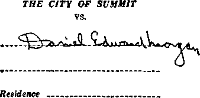
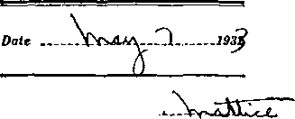
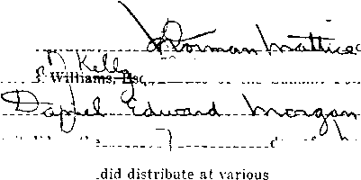
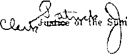
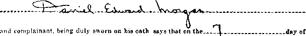
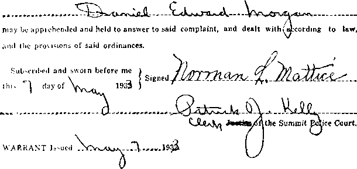
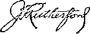

A JOURNAL OF FACT HOPE AND COURAGE
lllllilllllllHIIIIIIillllllllllllllllllllllllllllllllllllllilllllllllllllllllll
in this issue
TO PRESIDENT ROOSEVELT AN OPEN LETTER
WARNING TO CONSPIRATOR THE SPIRIT OF MURDER WHY FINANCIAL DISTRESS?
CONSPIRACY AGAINST THE NATION
every other WEDNESDAY
I_________ ___1
five cents a copy one dollar a year Canada & Foreign 1.25
Vol. XIV-No. 358
June 7, 1933
• • OfQ• ■" 1 - —— — 111 ♦ • •
CONTENTS
LABOR AND ECONOMICS
Great War or 1933 .... 3.',2
Cei’sis of World Financial
SOCIAL AND EDUCATIONAL
(h.tuIIs in Church nt ILinuib.ii . . 5 33
York's Host Popukii’ Niuncs . .'.51
Dwidly Alan and Deadly Auto . . 351
Another Man Convert1, d .... -'55 1 ii■ Iiviu:ires in Britain
MANUFACTURING AND MINING
2 '.009.000.000 Barreis of Oil . . . .'53
FINANCE—COMMERCE—TRANSPORTATION
‘■p>uy American” Canipaign , . , 553
Britain Spending /lore for Army.
Navy and Air.......554
Dciions Hold World's 1’vcuri.L . . 554
Air Express Around the World . . 55.5
POLITICAL—DOMESTIC AND FOREIGN
C ilorado Shale Police Abolished . . 553
AGRICULTURE AND HUSBANDRY
T.reels Become Poison-proof . , . 554
SCIENCE AND INVENTION
Cirnieti d with America by
'1'ck'phone......
554
The Ed vert on Stroboscope .... 554
First Seagoing Drydock . ... .' 54
Diesel Railway Engine in Brii.ini . 555
HOME AND HEALTH
Tomato Juice and Sauerkraut Juice...........553
Alan AVho Never Called a D.,etor . 554
TRAVEL AND MISCELLANY
Japanese Boycott in South China . 554
Palestine’s Happy Faces .... 554
A Building Boom in I’aie'-iine . . 554
Turkey A’vill Try to Control Narcotic Drugs
RELIGION AND PHILOSOPHY
Open Letter to President Rooseielt on Conditions
Judge Rutherford's Kindi, y
Warning to One oe thi:
Editorial in the summit "Herald”
“The AIonitok” Prm.i in:.;
Judge Rutherford'.; Chilienge 553 Negroes Tiring of ShmUeis . . . 5.53 The Spirit of Murder at
Honea Path........"55
Report on Honea Pa i n . . . . ’ 56 Conspiracy Auxin-t The N\twn . v71
1 m’> 1;4)ed other Vicdi'e-d.v by
Got,DEX AGE 1’1 BLi>II.LXG ('o.di’AXi, 1XC.
]I7 Adams ^ticet. Biooklxu. A. Y.. U. S. A
Cla; ton J. Y\u»dwoiih /’/ e.u-/t nt -Vithan II. Knoii rite C/CScdent Robert »S. Empty Mcc? t tary and Ti c,.n <■ i ci
1 DE ( LA i S A ( <H'Y
$1 a /car, United £ia’c-, M.25 to Canad'i and all other coun:rij>.
Ri.MTTTAN<'i.- • Uor J.oiir own safety, i,irit by jn>-.;al <>i cxieO'S nionev ohFi. WIfii emu or cunrr.i \ i" lo>t in the otdinai.x inaii.-, tbcie m no redro". Reinittanr.'s ainn toimtiies othei \han thoNe maned below may be made to the BtuulJyn ortiue, but only |)\ IA 1ERN A J. iC'NAL postal HiOMV> Ol'd'-l'.
ri ci ii’i of a new or renewal sub.sciipi.oii will be m knowledm-tl only whmi reque-ded. xoiicE of expiraj ion is sent with tin* journal one month bet’>re su’ ui’ption expires, i’lea-'C tenew piumptly to avoid of copies.
change of ai>l»rf>> : Siib-Hiibei's will plume nuUi\ this olht o ol chanuv of address at ie ;x( two weeks in advance.
i’l iiLisnEU also in J\inmh, Espeiai’io, Tinni-h. I'leneh, Gorman, Japanese, Norwegian, I’vh-di. I’oiimru-j e, bhn.tk'. ^pam-h. Swedmli.
Offices for Other CorNTRirm
Rriti-'h ............... 34 Craven Terrace. London, W. 2, England Canadian ........... 10 Irwin Avenue. Toronto 5, Ontario, Canada ■\ .ntnila^ian ....... 7 Beresford Road, StratliHeld, N. S. \V, Atrn’i ib i
Aftuan ........... Boston House. Cape Town, South Afru • rh.tmed as second-class mailer at Brooklyn, N. Y., under the Act of March 3. 1-79.
Volume XIV Brooklyn, N. Y., Wednesday, June 7, 1933 Number 358
An Open Letter to President Roosevelt on Conditions at Summit, New Jersey
AS THE president of the whole people of these United States, claiming faith in Jehovah the God of the Bible, and in the Scriptures as His Word, your attention is here brought to a condition of official lawlessness in Summit, New Jersey, which is well worthy of your attention as the chief magistrate of this country.
The man most prominently m e n -tioned herein, and to whose record w’e desire to call your attention, is one of the bravest veterans America ever sent to the front in the World War. He was one of the United States Marines, a machine gunner of the Second Division, in every important engagement from Chateau-Thier-ry to the end of the war.
Summit police Cmtri, OF THE CITY OF SUMMIT
Warrant
VIOLATION OF ORDINANCE
CONCERNING DISTRIBVTION OF HANDBILLS
Complainant _ .VL
Residence
THE BACK
OF THE WARRANT
At Chateau-Thier-ry, as you know7, the one American division wore out five seasoned German divisions. For tw'cnty-seven days Dan Morgan was out there in Belleau Woods without vyater to vrash his hands, often W’ithout food, while all around him death decimated the ranks.
To live at all, he and his comrades had to take
the bits of food left in the pockets of the men slain. To live at all, they had to bury in shell holes men that W’ere so rotten they pulled apart ■while they were being dragged aw a y. To live at all, on one occasion, he had to hide for a week in a trench in which the legs of a dead man dangled. There were absolutely no sanitary arrangements. On one occasion, i n a later conflict, he lived three days in the hottest weather in the sump of an abandoned toilet.
If you want to know what the World War was really like, Mr. President, you should read his book, When the World Went Mad. Just addresshim, Dan Morgan, 153 Main Street, Fort Lee, N.J., send $1.75, and he will send you the book as soon as he gets out of prison.
This fearless man is now lingering in prison, not because he wrong, but because he is
has committed any
the victim of conspirators, who are detennined to destroy him, if possible, because he is exercising his God-given privilege to go forth from home to home comforting the people in the Scriptures and preaching to them the gospel 647
of tlio Kingdom, the preaching of which necessarily exposes the duplicity cd a great religious organization.
You well know, Mr. President, that in this country, as in England, there is a most complete freedom of expression of opinion on any subject, whether by spoken word or written document, that the people here are at liberty to discuss any subject under the sun as openly as possible and in any way they choose; that any person has full liberty to say that the Constitution should be changed, that the people should change their religions, or even, if they s o desired, that there should be no religion at a 11. They have fullest absolute right to criticize a n y church o r a n y teachings whatever, and to set forward their o yv n teachings i n any manner they see fit. That right is being denied at Summit, New Jersey.
WARRANT ORDINANCE
You know that lie teaches, and has a right to teach, that the Devil lias overreached all the governments and all the churches of the world, and that there is absolutely no way of escape but for those in power to come squarely over on the Lord’s side, if they will, and for the people to do it anyway, abandoning all institutions of men that are not four-square with the Word.
Summit Police court
CITY OF SUMMIT, COUNTY’ OF UNION, STATE OF NEW JERSEY,1
at the City of Summit did on the
OF THE CITY OF SUMMIT
SS.
EAS,
To any Officer or member of the Police Force of the City of Summit, or any Constable of said County. Greetings:
on oath, before
Summit, that
on this day made complaint
day of—r
of the Summit Police Court of the City of
A. D., 193^,
id to persons in the
City of Summit,printed adverting matter, to wit, pamphlets, advertising the Watchtower International Broadcast of Brooklyn, New York, and Judge Rutherford’s books, without first obtaining a permit to do so from the City Clerk and the written approval of the Chief of Police, in violation of an ordinance entitled “An Ordinance Concerning Distribution of handbills or other written or printed matter in the City of Summit,” passed May 7, 1929. These are therefore, in the name of the City of Summit to authorize and command you forthwith to apprehend the said
and him forthwith bring or cause to come before mj. Robert B. Williams, Jftstice of the Summit Police Court of the City of Summit, to answer unto the said City of Summit, in an action of Debt for a penalty of Twenty Dollars, and have you then and there this writ.
.mder my hand and the Seal of the said Court this___
day of..J
Court.
THE MOST ASTOXISIIIXG WARRANT EVER PRINTED
You are aware that Judge Rutherford teaches, and has a right to teach, that Christ Jesus, the Anointed King of Jehovah God, has set up Uis invisible ridership over all the countries of the world, including the United States; you know that he teaches, and has a right to teach, that you and every other person in these United States must bend to the teachings of that King, and bring your life and your official acts into accord therewith, or perish in the battle of Armageddon which he holds, and which the Scriptures disclose, is just ahead.
The town of Summit, New Jersey, has, by its official spokesmen or executives, taken its stand firmly and perhaps irrevocably against God and on the side of the Devil. In the three etchings which are reproduced in this issue we present the proof of a conspiracy by these officials to deprive American citizens of their unquestionable and inalienable rights. Against these acts of conspiracy we protest.
It is the view of Judge Rutherford, and it is our view, and we have full and absolute right
to hold such views, and to express them, that the building of great churches which stand idle all the week while thousands of the very poor have not where to lay their heads, huddling in improvised shelters on the edges of garbage dumps, is worse than foolish; it is criminal.
But it is not foolish and it is not criminal to teach the people over the radio and by the printed page that the Devil i s the one to blame for all their misfortunes, and that Christ Jesus has come as their great Deliverer. Nobody has to accept these truths unless he wishes t o do so, and to live in God’s Kingdom, and on the other hand nobody in S u m m i t, N e w Jersey, o r elsewhere has the slightest r i g h t in human or divine law or in justice, reason or c o m m o n sense to take such m cans of suppression as we bring to your notice in these etchings.
Summit Police Court
OF THE CITY OF SUMMIT
stated by this question, and see how manifestly this was the very thing that was done at Summit, New Jersey.
The throne of iniquity or lawlessness is the throne of the Devil, the rulership or authority of the Wicked One that showed Jesus all the kingdoms o f the world in a moment o f time, and offered the rule of all those kingdoms to Jesus if He w o u 1 d b u t prostrate himself before Satan, as Judas, Dilate and others have done.
Jesus indignantly refused; Judas w a s first o n one side and then on the other; and Pilate o b e y e d hesitatingly. Jesus was right, and the other two were wrong. H a d Jesus yielded to the Devil, everything‘religious’ would have been entrusted to Him, as it has been to the clergy, and then ruin w o u 1 d have been ahead for us all. It is noteworthy that Jesus neve r asked
CITY OF SUMMIT, \
COUNTY OF UNION, V STATE OF NEW JERSEY.)
of the City of Summit complains of
International Broadcast of Brooklyn, New York, and Judge Rutherford’s books, without first
obtaining a permit to do so from the City Clerk and the written approval of the Chief of Police, in violation of an ordinance entitled “An Ordinance Concerning Distribution of handbills or
other written or printed matter in the City of Summit,’’ passed May 7th, 1929, and the amend
ments thereof,
and is liable to a penalty within the intent and meaning of the said ordinances. Complainant thcrefoie piays that the said
THE EQUALLY ASTONISHING COMPLAINT
In Psalm 94, verse 20, the important question is asked of Jehovah God: “Shall the throne of iniquity have fellowship with thee, which fram-eth mischief by a law?-’ See what is plainly
the priests, scribes or Pharisees, Herod or Caesar, or any of their agents, whether He might do the work His Father, Jehovah God, had entrusted Him to do. We meekly but firmly follow His example.
Thore is more about this framing of mischief by a law. Ln Psalm 94 it is written: "They gather themselves together against the soul of the righteous, and condemn the innocent blood.” The Psalm goes on to tell what will be the outcome of such conspiracies against Jehovah's witnesses in the earth. It says: ‘‘But [Jehovah] is my defence; and my God is the rock of my refuge. And he shall bring upon them their own iniquity, and shall cut them off in their own v i -kedness; vea, [Jehovah] our God shall cut th-m off.”—Psalm 94: 20-23.
In another of God's prophecies (Isaiah 59) this framing of mischief by a law is called ‘conceiving mischief’. The thought is the same. Referring to such works of oppression as have boon done at Summit, the prophet says :
"Your hands are defiled with blood, and your fingers with iniquity; your lips have spoken lies, your tongue hath muttered perverseness. None calleth fol’ ji'stiee, nor any pleadeth for truth; they trust in vanity, and speak lies; they conceive mischief, and bring forth iniquity.”—Isaiah 59:3,4.
This Warrant Ordinance of the Summit Police Court is not some legislation carefully considered by honest men and intended for the welfare of the people. It is ‘mischief framed into a law’. It has a bad motive, an evil motive, an accursed motive back of it. It is intended to bring forth and does bring forth iniquity, which is injustice. The prophet continues:
‘‘They hatch cockatrice’ eggs, and weave the spider’s web: he that eateth of their eggs dieth, and that which is crushed breaketh out into a viper. Their webs shall not become garments, neither shall they cover themselves with their works: their works are works of iniquity, and the act of violence is in their hands. Their feet run to evil, and they make haste to shed innocent blood: their thoughts are thoughts of iniquity; wasting and destruction are in their paths. The way of peace they know not; and there is no judgment in their goings: they have made them crooked paths: whosoever goeth therein shall not know peace.”—Isaiah 59:5-8.
There is more in the Scriptures about this framing of mischief into a law. It is mentioned again in the seventh Psalm, where it is again referred to as ‘conceiving mischief’. This language indicates that the framing of an illegal act into a law is of no actual consequence. It is merely a vain imagination. The mind wishes to do something unjust, something illegal, but the law enacted is of no weight, no more than if it had never been thought of. The psalmist says:
‘‘Behold, he travaileth with [lawlessness], and hath conceived mischief, and brought forth falsehood. He made a pit, and dinged it, and is fallen into the ditch which he made. Uis mischief shall return upon his own head and his violent dealing shall come down upon his own pate."—Psalm 7: 14-16.
Yet once again we read in the Psalm about this framing of mischief into a law. Of the wicked it is written that "under his tongue is mischief and vanity’’. But let us have the whole statement, and see what awaits those who seek to entrap innocent followers of Christ Jesus who are diligently doing good in obedience to the commands of God and not doing wrong to anybody. Please note:
“The wicked in his pride doth persecute the poor: let them be taken in the devices that they have imagined. For the wicked boasteth of his heart’s desire, and blessetli the covetous, whom Jehovah ab-horeth. The wicked, through the pride of his countenance, will not seek after God: God is not in ah his thoughts. Uis ways are always grievous; thy judgments are far above out of his sight. . . . He hath said in his heart, I shall not be moved; for I shall never be in adversity. His mouth is full of cursing and deceit and fraud ; under his tongue is mischief and vanity. He sitteth in the lurking places of the villages; in the secret places doth lie murder the innocent: his eyes are privily set against the poor. lie both in wait secretly, as a lion in his den: he lieth in wait to catch the poor: he doth catch the poor, when he draweth him into his net. He crouchctli, and humbleth himself, that 1he poor may fall by his .strong ones. He hath said in his heart, God hath forgotten: he hideth his face; he v.ill never see it.”—Psalm 10: 2-11,
Just consider that a little. Those that frame mischief by a law are denounced as friends of the covetous clergy, whom Jehovah abhors. They are said to be full of cursing, deceit and fraud. They are accused of having lurking places in the villages where they cook up mischief against the poor men and women -who love Jehovah God and are trying to do His will. They are charged with secretly plotting to commit murder; they are denounced as secretly trying to find some way to catch the poor and draw them into their net, into prison, and they do this by calling into play the strong-arm squad, the police, who do what they are told without ever considering whether it is legal or illegal, right or wrong.
Let us hear the conclusion of the matter. Continuing, the tenth Psalm represents the servants of God as saying:
“Arise, 0 [Jehovah] ; 0 God, lift up thine hand: forget not the humble. Wherefore doth the wicked [despise] God? he hath said in his heart, Thou wilt not require it. Thou hast seen it; for thou beholdest mischief [framed into a law] and spite, to requite it with thy hand: the poor committeth himself unto thee; thou art the helper of the fatherless. Break thou the arm of the wicked and the evil man: seek out his wickedness till thou find none. [Jehovah] is King for ever and ever: the heathen [meaning the hypocrites] are perished out of his land. [Jehovah], thou hast heard the desire of the humble: thou wilt prepare their heart, thou wilt cause thine ear to hear; to judge the fatherless and the oppressed, that the man of the earth [the Devil, and his crowd] may no more oppress. ’ ’—Psalm 10:12-18.
Give us the new deal, Mr. President, in this matter of religious persecution. Call a halt on these strong-arm squads that consider the distribution of godless comic sheets on Sunday perfectly proper, but through pressure from priests and preachers of numerically powerful religious bodies, trespass upon our rights and lock up men like Dan Morgan. This outrage is only one of scores to which our people have been subjected of late, in most flagrant defiance of the laws of God, the fundamental law of the land and the fundamental laws of the states themselves.
And now, Mr. President, we feel sure that you and all our regular readers will be greatly interested in the following letter of Judge J. F. Rutherford concerning this Summit outrage. Conditions there, as respects conspiracy to blockade the spread of the pure truth of God’s Word, are in some respects the -worst, the most brazen, of which we have ever heard. Who would have supposed that a warrant like this signed by Patrick J. Kelly could ever have been printed in these United States?
Judge Rutherford’s Kindly Warning to One of the Conspirators
May 15, 1933.
Mr. Patrick J. Kelly,
Clerk of the Summit Police Court, Summit, N. J.
Sir:
Just now a copy of a warrant issued by the Summit Police Court has been sent to me, that is to say, a photostatic copy. It seems that the local court has entered into a conspiracy, anticipating in advance that there would be a violation of your city ordinance, to arrest witnesses to Jehovah’s kingdom. I note that you have printed those warrants in which the name of the Watchtower International Broadcast of Brooklyn and my own name are included. You have thus deliberately and with malice aforethought put yourself against Jehovah’s witnesses and on the side of the enemy of God and mankind, Satan; but take notice that Jehovah will recompense you and all your company duly and in due time for your wickedness.
You may think you are injuring men and women and that by so doing you can stop the witness to Jehovah’s kingdom; but you will never succeed. These men and women have wholly devoted their lives to the Lord and His kingdom, and the Lord, the great Jehovah God, will see to it that they are duly vindicated for such ill treatment. They are doing harm to nobody, but are only trying to notify the people of how their relief can come to them from this oppressive system that the Devil has put upon the whole world and how he has used it to oppress mankind, and God’s provision for their relief and blessing.
I do not expect this letter to do any good, but the purpose is to serve notice upon you and your associates that you are fighting against Jehovah God and His kingdom and in due time you will receive what is written in His Word as a judgment against all deliberately wicked doers. Just keep this letter and see what comes to pass in the Lord’s due time. He has declared that all mankind shall know that He is supreme, and the time to prove it is near at hand.
The wicked inquisition instituted in Spain and Mexico years ago is being repeated by men in this country like yourself in apparently a more refined form, but which is as cruel and vicious as ever, and it is not going unnoticed by the Lord. If these men were engaged in the racketeer business of beerselling or doing injury to mankind in some other way, you men would wink at it; but when they go about trying to do good to their fellow creatures by trying to help them to understand God’s gracious purposes for their blessing, you see to it that they are punished. The Lord will reward you, be assured of that one fact, and He will do it so thoroughly and completely that you will never forget it.
This letter is intended for you and the magistrate and all of you of like spirit who are bent on doing injury to men and women who are only trying to do good to their fellow creatures. Anyone with the disposition manifested in the warrant must have a malicious heart, that is, one rcgardL'.s of social duty to his follow creatures and bent on doing injury to others. Your conduct proves that the Catholics and Protestants of so-called “organized religion'’ and labeled “Christianity''’ is but another commercial organization and carried on by the Devil for the purpose of keeping the people in blindness; and for fear’ that the common people might know the truth, you lend yourself to the Devil to do injury to the Lord’s faithful and true witnesses.
Don’t you think it is a pity that police officials do not busy Uiemsilves with crooks and noted criminals insiu’.d of the nan and women who are trying to help their fellow creatures in this time of distress? As certain as you read these lines, the day will come when you will v.eop tears of bitterness for the crooked way in which the priests and clergy have led you into this trap of the enemy.
Sincerely,
EDITORIAL IN THE SUMMIT HERALD, MAY 16, 1933
TOLERANCE OR PERSECUTION
Considerable excitement and interest was created last summer and now again on a recent Sunday by the influx of a large group of Jehovah’s witnesses, who, after the police had received many complaints, were arrested as violating the ordinance of distributing literature without a permit. As reported in the news columns, it will be noted that a number of those who were arrested were committed to the county jail in default of paying a fine.
There is little doubt that these persons from out of town have violated a local ordinance, but there is a feeling on the part of some people in the community that these numerous complaints by our residents to the police are evidence of intolerance not generally characteristic of this community. In a letter to the Herald, one of our estimable citizens comments on this matter as follows:
“I was interested in one of ‘Jehovah's witnesses’ who accosted me. He was a good-looking, well dressed young man. He spoke quietly, but with an evident conviction. I answered him softly, telling him that while I did not subscribe to his faith, I respected his and all other religious faiths. He responded with gracious thanks and was on his way briskly. In no way could he have been accused of any discourtesy, much less of offense.
“Surely if we deal with such persons gently, we will do much more to influence them toward rational behaviour than by locking them in jail.’’
It is cpiite true that those accosted and those whose homes have been visited by the “Jehovah’s witnesses’’ may heartily disagree with the religious cult they represent and also with their methods of spreading their views, hut certainly if these “witnesses” act in an orderly and courteous manner and are not offensive or persistent in their efforts to hold up people with their propaganda, their efforts would be harmless; and if they have the satisfaction of free access once in a while they might see that they were not making progress and those who feel they have been disturbed would likely not be disturbed thereafter.
Whether this attitude is correct or not we cannot say. Nevertheless it is a thought on the subject and might be worth a trial in the community.
THE Great War of 1933, in the words of a noted London journalist, J. L. Hodson, in the News Chronicle, is the great war of knowing what to do with the unemployed. He has just finished visiting Sweden, Germany, Czechoslovakia, Austria, Italy, Holland, Belgium and France, where he made careful inquiry into the numbers of the unemployed and methods being taken to provide for them. His conclusions are that “only the Great War dwarfed this one of 1933 in horror. In every country in Europe suicides are piling up in hundreds or thousands. In every country undernourishment exists, and in some it is extremely grave. Nowhere in Europe did I find the campaign being prosecuted with genius or even adequate thought and vitality. If ever complacence was an outrage it is now.”
HE MONITOR, Aurora, Ido., in its issue of May 13, 1933, publishes in full Judge Euth-erlord's challenge to the pope, addressed to The Catholic Bullet hi, and published in our issue of May 24. The challenge is:
“RESOLVED, That the Holy Scriptures prove beyond doubt that the head of the papal church system and its many priests who act officially under its direction do not act by the authority of Jehovah God and Christ Jesus and do not represent God and Christ on earth, but said Catholic institution is a part of this world and operates under the supervision of the god of this world, that is to say, Satan, the Devil, and that thereby the people are deceived and kept in ignorance of the truth, which truth is now vital for them to know.”
Commenting on the challenge and the letter of which it was a part, the editor, Mr. Charles Murphy, had the following front-page editorial. Every reader of The Golden Age yvill admire this splendid defense of common decency.
WHY THE RUTHERFORD CHALLENGE
By Chas. Murphy
It is given to but few institutions to build so powerfully and to attract so huge a following as has the Watch Tower Bible and Tract Society. Few religious leaders in America have ever commanded so large an audience or claimed through the love and faith of his people, the allegiance of so vast an army as has been mobilized under the leadership of Judge Rutherford, the President of that society.
He has recently been broadcasting over a nationwide hook-up, and the truth on Romanism and her tin-scriptural position has had his attention. This has followed a series of talks over powerful Mexican stations in which he was equally emphatic. I have reason to know that whether Judge Rutherford is speaking or writing, lie is always careful to know his citations and proofs will stand up under attack—so, when in reply to a recent Rutherford Broadcast The Catholic Bulletin of St. Paul resorted to the usual papal tactics of calling names instead of attempting to disprove his statements, it tackled the wrong man.
Rutherford is wholly without fear, and he knows his AB C’s both ways from the middle, so he lost no time in replying and adding a challenge to Rome to pick out her man and meet him in debate on the air.
He has favored The Monitor with a copy of his reply to the papal editor which we consider worthy of widest possible publicity so Rome may have the full benefit of it as the papal organization once more shows its yellow streak and refuses, through fear of Truth, to submit its claims to the people.
HE Olyphant (Pa.) electric light plant showed a net profit of $19,597.82 during 1932, to compare with $17,949.60 in the preceding year, despite the fact that the rates had been reduced from ten to eight cents per kilowatt hour.
IT IS claimed that the “Buy American” campaign, offsetting in America the “Buy British” campaign of the British Empire, has already considerably increased the American output of chinaware, several orders which would normally have gone to Europe having landed here.
REFRESHING, body-building tonic may be made by mixing equal parts of tomato juice and sauerkraut juice. Drink one or two glasses daily, as a general tonic and blood strengthener. So says T. R. Weeks, pioneer.
OLORADO has abolished its state police.
The principal achievement of these police was in a coal strike in 1927, when seven unarmed minors were killed and twenty wounded. Theoretically, their job of late years was to enforce the prohibition law.
IT IS estimated that there have so far been extracted from the earth about 23,000,000,000 barrels of oil, differing greatly in appearance, quality, odor and usefulness. All this crude oil would not till a hole in the ground one mile square and one mile deep.
T THE Prince Avenue Baptist church, Hannibal, Mo., the pastor preached dressed in overalls. It would be a wonderful thing if all the clergy would get used to these plain but practical items of apparel which will be in such demand in clerical circles shortly.
TN ITS issue of March 12 the London Sunday Times said: “At no time since 1914 has there been so much open and alarmed talk about war, or a situation more immediately threatening.”
Britain Spending More for Army, Navy and Air T^OR 1933 Britain’s na\y budget is up £3,093,700 over last year; the army estimate is up £1,462,000, and the air force estimates are up £26,000. Fifteen capital ships and cruisers now have catapults for aircraft.
BRITONS hold the world’s airplane distance record, 5,341 miles, from Cranwell, England, to Walfish Bay, South West Africa; the altitude record of 43,976 feet; and the speed record of 407^ miles an hour.
\ T SOUTHEND, England, a man has just died who never called a doctor. He passed away at the age of 94. This man also had a brother who never called a doctor; he died at the same age.
Connected with America by Telephone
SOME of the countries connected with America by telephone arc, all of Europe, except Greece; all of Central America, Australia, Siam, Java, Sumatra, South Africa, Egypt, most of South America, Bermuda, and the Bahamas.
IN SOUTH CHINA the anti-Japanese boycott has been so successful that the Japanese have lost 95 percent of their trade. The destruction of Canton, akin to that of Shanghai, in the war that was not war, is now in order.
IN THE new’ city directory of New York there are 94 linear column feet of the name Smith, 84 column feet of Cohen, 67 of Brown, 57 of Miller, 48 of Johnson, 37 of Williams, and 33 of Jones.
Deadly Man and Deadly Auto
TN 1931 we had in the United States 11,160 J- murders and 20,088 suicides; total 31,248.
In the same year we had 31,693 deaths from automobile accidents; so, of the two killers, the automobile seems a little the worse.
WITH the Edgerton stroboscope, developed at the Massachusetts Institute of Technology, thousands of snapshots a second may be taken of rapidly moving machine parts. By this means flaws can be detected as they develop.
fTUIE disappointing discovery has been made that insects frequently become immune to one poison and another has to be tried. Thus the mixture once used to fight the San Jose scale becomes ineffective in an orchard where it has been several times used.
Uncle Sam -will shortly have the first seagoing drydock. It is to be 393 feet long, 60 feet wide, and 33 feet high from keel to top deck, sufficiently large to repair a destroyer. It will have a ship’s bow, to allow easy towing, and have a hinged gate at the stern.
Palestine’s Happy Faces
Major H. L. Nathan, British member of Parliament, back from a trip to Palestine, says: “One sees more bright faces to the square mile in Palestine than to the hundred square miles in England, France or America.”
A DISPATCH from Jerusalem under date of January 27 states that at that time there was then being experienced a building boom the like of which Palestine has not witnessed since 1925, that builders were unable to keep pace with the unusual demand, and that there was an acute shortage of laborers.
TOWN halls are being established throughout Turkey. These halls, called “People’s Houses”, are intended to be centers where the spokesmen for the government can give lectures to the people on all phases of Turkish life.
President Mustapha Kemal, of Turkey, has announced that hereafter Turkey will close all private factories manufacturing narcotic drugs and will confine this trade to a single factory owned and managed by the government. Turkey has hitherto been one of the worst offenders in the trade in narcotics.
ANOTHER man lias been converted and will hereafter try to lead an honest life. The want ad columns of a Philadelphia paper tell us about it:
Educated man, white, age 40, former minister, drive truck, work hard at anything for food or clothes. Powell, 4454 N. Uber St.
TWO educated Negro ministers and sociolo--L gists who have been studying Negro churches and church work in Atlanta give it as their opinion that the shouting sermon is rapidly on the wane in colored churches. The people are waking up; they have been bluffed long enough and now they want to know something.
"DUNNING easily at 65 miles an hour, the first ■*-*’ Diesel electric train in England made the 113-mile run from London to Birmingham on 27 gallons of fuel, costing a total of about $1.20. Financiers are delighted, and mine owners and miners dismayed, at the possibilities herein suggested.
TN GREAT BRITAIN, in the fiscal year 1929
1930 the following were the number of incomes over £40,000:
|
Between |
£40,000 |
and |
£50,000 |
275 |
|
Between |
£50,000 |
and |
£75,000 |
263 |
|
Between |
£75,000 |
and |
£100,000 |
116 |
|
Over |
£100,000 |
144 | ||
Air Express Around the World
THERE is now air express service to most important points in the world, the gap between New York and Plymouth being bridged by the fast transatlantic steamers. The rate from New York to Cape Town or to points in India is $2.10 per pound. The time from Los Angeles to Karachi, India, is IS days.
TN THE eyes of Almighty God, it is not neces-ary to actually take the life of a fellow man to become a murderer. Jesus makes this perfectly plain in His magnification of the law of Jehovah God. Read carefully His analysis of the Sixth Commandment:
“Ye have heard that it was said by them of old time, Thou shall not kill: and whosoever shall kill shall he in danger of the judgment: But I say unto you, That whosoever is angry with his brother icilhout a cause, shall be in danger of the judgment: and whosoever shall soy to his brother, Raca [maegin, Vain fellow], shall be in danger of the council: hut whosoever shall sav, Thou fool, shall be in danger of hell fire.”—Matthew 5 : 21,22. [Words in italics are spurious.]
By the terms of this analysis it will be perfectly clour to every one of our readers that the unnamed clergyman in the following communication is a murderer in the sight of God, and would doubtless have been cjuite content to be one in the eyes of his fellow men had not the angels of God stayed his hand at the opportune time.
Not only is this clergyman a murderer, but he is entirely outside of the temple of God and at the present time entirely outside of eternal life. Tlie Scriptures are very explicit on this point:
“Whosoever hateth his brother is a murderer: and ye know that no murderer hath eternal life abiding in him.”—1 John 3:15.
The sadly confused condition that the people are in may be discerned from the fact that at first practically all the people in this enterprising little city were ready to follow this murderer to their own ruin. But by the time the great Jehovah God had carried the affair to its logical end the situation was completely reversed.
It takes the common people cprite a little time to realize that the kingdom of God is really established, and that the judgments of Jehovah are really abroad in the land, though contested by Satan and his minions at every stage; but when they finally see through the smoke and confusion with which the adversary purposely beclouds the issue, the bulk of them are ready to cry out, “Lo, this is our God: we have waited for him, and he will [come and] save us.” Poor things! How badly they need the help such as Jehovah’s witnesses and Uis anerels brought them at Honea Path! (*S'ee page 556)
Report on Honea Path By Anton Koerber
Anderson, S.C., May 1, 1933.
Dear Brother Rutherford,
Jehovah is our strength and song. This fact we learned more of in the Anderson (S.C.) campaign on April 30.
The Lord provided a fine assembly point at Brother Marchbank’s home, and a beautiful day for the occasion. Three hundred witnesses reported for action on time and proceeded to give testimony in Anderson, Iva City and Honea Path, S.C. In Anderson, where Jehovah’s witnesses have been threatened recently, no opposition was encountered whatever. The mayor granted permission to stretch a large banner across the main street advertising the Kingdom message given Sunday morning over the radio. The police and other officials accorded us every courtesy, and the people received us very kindly and manifested much favorable interest in the message.
At Iva City, where pioneer L. C. Ross was recently arrested and convicted, the mayor welcomed us and assured us there would be no interference on his part, and we had none. R. G. Watson, the magistrate who brought charges against Brother Ross in the case referred to, has been removed from office since then and, of course, could not officially interfere.
At Honea Path, where continual interference has been experienced for the past seven years, we met different conditions. Apparently the Devil had laid a trap at this place, because the most vicious spirit I have ever seen was manifest by the officials of Honea Path, as the following report will show.
The usual letter and list of names were filed with the chief of police. We entered the town about 9:30 a.m., and about 10:00 a.m. seven witnesses were arrested by order of the mayor, who on two former occasions had tried and convicted Jehovah’s witnesses. Hearing of the vicious attitude of the chief, two brethren were sent to learn of the treatment of the ones arrested and when the trial would be. These were threatened with violence and ordered out of town. I then called upon the mayor to learn of the disposition and treatment of the Lord’s people arrested. An immediate hearing was held before the mayor. Brother McLamb accompanied me and we presented our case amid threats of violence by the chief of police and several detectives to intimidate us in giving testimony, and the mayor refused to stop them.
Near the end of the hearing a door opened and there stood a clergyman with about 70 manifesting the mob spirit, making threats to me regarding the churches and the American government and our literature relative thereto. The mayor then, in the presence of the mob, proceeded to denounce the Watch Tower organization in a speech that wound up with the command to the police to arrest every one of them who took a penny of the people’s money.
As we attempted to depart the clergy with his mob blocked our path and demanded we answer certain questions regarding the sabbath day, the churches and the American government. I did, by the Lord’s grace, showing that one of the reasons for the people’s present condition was due to the defaming of Jehovah’s name by political rulers who acted upon the counsel of the Devil’s agents, the clergy. Then asked him some questions, which he refused to answer, and he was glad to let the matter drop. The crowd partly divided upon this issue, but the chief of police became abusive and swung them in line again with a threatening attitude.
Then requested to see the arrested witnesses. This request was granted by the mayor, and I encouraged the witnesses behind bars to trust in the Lord and assured them we would not leave them there.
Most of our 300 were working in Anderson and were back to the assembly point by that time, so I returned and acquainted the others with the facts. All volunteered to go to Honea Path; so the 300 were organized into several contingents of 70 each and we proceeded to a point selected three miles outside the town. From here a contingent of 70 were sent into action at a time.
The police arrested them immediately, in small groups, until 38 were in jail. Police had orders to arrest only those actually found placing books and receiving money or goods. I cite herewith only a few incidents to show the devilish spirit to secure the evidence they desired. In one case an officer appeared at the door with several others, stuck a gun against the stomach of Jie brother v lines? ing, end demanded he sell a book and accept the money on such terms, in thn presence of the witnesses there in the house. Another case; Members of the chief’s family took books, gave money, then followed the car and arrested the driver several miles out, leaving the others stranded. Another officer appeared at the door and struck a brother in the jaw, knocking him off the porch. In a number of other cases the officers stood by while R F C mon hired by the mayor struck our people, and when protest was made to the chief and mayor they replied to 'beat it before the other eye was blackened'.
But the Lord’s angels were with us. At first the people would have nothing to do with us, for fear of the strong-arm squad. But after the third contingent of 70 came into town they began to ask questions, and soon the whole town suddenly awoke to the fact that we really had a message of the Kingdom for them. By the time the fourth contingent of 70 came to town nearly everyone had taken books or booklets to learn what it was all about. In the meanwhile Jehovah’s witnesses were arrested under every kind of charge, including violation of parking rules, blocking traffic, spreading propaganda against the American government, disturbing the peace, etc.
They learned we were parked on the highway several miles out with some cars, and sent the county sheriff after us. Some farmers came along and offered their farm from which to operate, but we located a schoolhouse and grounds and operated from there, continuing to send in groups of 70 fresh troops every hour. By G p.m. the people had received the witness three or four times. By 7 p.m. the tide had turned; most of the people had a book or booklet and realized that men and women serving God had been treated shamefully by the officials. By 8 p.m. a large number had gathered at the town hall asking for the mayor to speak and explain their action to the people; but he stayed inside.
At 9 p.m. the county sheriff asked me what we would do now. He was advised we would continue to witness all night if necessary, and the people wanted to hear it. By 10 p.m. the scene was as follows: About forty witnesses were in jail. Several others were in the sheriff’s office. Those in the jail were singing praises to Jehovah; another group were around the town hall mingling with the people, who were asking many questions on the Bible and glad to get Ilie literature. Then there was another group working at the homes in the town.
In the meanwhile county police, state police and newspaper reporters came from Anderson and Greenville. The mayor was questioned as to what his objections were, and the people answered for him and told how we had been treated. The mayor then began to try to compromise with us. lie made the proposition that he would release all other violators except those charged with selling books. After this was refused, he proposed to release all if I would sign a bond for their appearance in the morning. After this was refused the sheriff and several other county officials came over, and after learning that we were Christians doing a good work and would not be run out of the country like a dog with his tail between his legs, he reported back to the mayor. The mayor had gone home, as if the matter were closed for the night.
A group of us wont to the schoolhouse and offered up prayer to the Lord. When we returned to town, a short time afterward, the brethren had just been released and they and the town folks were rejoicing together. Learned later county sheriff demanded mayor to release Jehovah’s witnesses.
The groups were well organized, and within a short time the drivers had found their respective groups and were headed back to the assembly point. At 12 midnight, after all reported in O.K., under the moon and stars, we had a short service of praise to Jehovah for His loving-kindness and all departed for home rejoicing as never before, reminding each other of the day’s text, “The battle is not yours, but God's.”
Following is a report of the witness results for the day: Books, 77; booklets, 1,813; total, 1,890; cars, 67; witnesses, 302; hours, 2,775; testimonies, 7,234; obtainers, 1,517.
The people stated that they were confident Jehovah's witnesses would not be interfered with again, and welcomed us back any time.
Jehovah's witnesses assembled here are grateful for this privilege of service, and gave expression to the fact that they are ready at all times to praise the name of our God Jehovah.
They join me in sending much love and greetings in His name.
ALL thinking- men and women know that there is something sadly wrong in the world today. The prime minister of Great Britain, Ramsay MacDonald, has just recently said, “We see nothing more and nothing less than a world crumbling under our feet.”
All world leaders are perplexed, the masses bewildered, and an ever’ increasing number are in distress and great need. None of earth’s wise men can discern what is the cause of the depression, and so cannot offer an intelligent explanation to the people. From time to time statements are made in the hope they might prove true; such as, “We have had similar conditions before; there are cycles of depression and good trade; carry on.” “All will yet be well; it must be so.”
But these only act as a sleeping draught might on a much worried man. The faculties are dulled for a time, but when the effect of the draught has worn off conditions are always the same or a little worse.
There is something approaching that looms like an apparition out of the mists of the past; something that is the embodiment of evil that frightens by its unseen presence even those who dwell in seeming safety. Because it is so big that men appreciate something of their inability to cope with the dreadful specter they try to laugh and say, “Who cares?” “It will never come.” “Things must go on.” “Let us eat, drink and be merry, and tomorrow shall be as this day, and much more abundant.”
But every night’s debauch has its morning to follow; and each jest now made, each laugh raised, every optimistic speech recorded, only serves to make more evident the approaching crisis which stands even now on the threshold of every nation, knock, knock, knocking, at the door.
Can we name this gaunt specter that threatens all and sundry, terrifies all who have courage enough to look, and fills with dread foreboding those who feel rather than see its presence?
Yea, it has a very apt name.
There are certain fixed principles by which Jehovah God works. One of these ought to be well known to all “Christian nations”; namely, ‘What a man sows, that shall he also reap.’ This applies to nations as well as to individuals, and that which now draws near is retribution, terrible retribution, especially on those nations that, having heard that justice is the foundation of God’s throne, have claimed to be His representatives and yet have been unjust, unmerciful, avaricious and blasphemous in their dealings with other nations less enlightened than themselves, and even with their own nationals. "What has been sown in the past has now to be reaped, but in the economy of Jehovah the fruitage of past sowing is compressed into a comparatively short period of time; hence the ‘time of trouble such as was not since there was a nation’!
“Christian” nations have ruled the world. They have made laws, instituted customs, created monopolies, and, enforcing their will upon others, have claimed that their conduct was just and that they did these things in the name of God. It would therefore follow, if their claim were true, that in the end these things would bring God’s approval. Jehovah would uphold their works, make still more secure their throne and authority, and the fruit of their sowing would be world prosperity and an outlook bright with hope like sunshine at the dawn of a new day. What is the truth of the matter?
The causes of the present crisis are many and varied, and it would not be possible within the limits of this article to touch upon more than one. But since the root of all evil is the love of money, an examination of its beginning, its use and abuse, and its relationship to the present world depression, may enable us to see something of the inflexible law of justice, giving us a view of Nemesis on the track of the vanquished nations and that must indeed drink of the wrath to come.
If the picture seems black and reveals a further storm ahead let not the reader despair. Remedy there is, though in no human hands: one that will wipe all tears away and bring the sunshine of the love of God into the hearts of those who love the things that are right and hate those that are evil; one that even now is like a beacon set upon a hill, carrying the news far and wide to the people that the Sun of Righteousness is rising, with healing in His beams. It warms the heart with a life-giving glow bringing assurance amidst present turmoil; and after the manure of present trouble will come forth the flowers of spring. They will bud and bios-som and bring forth their fragrance, beauty and fruit; but the rain of truth must first wash this evil-smelling thing into the soil and then the sun can do its work. Then the human race will rejoice indeed, loved ones will be restored to family life, man will inherit the promised Canaan of rest, and nothing anywhere will ever again make him afraid. Jehovah will hasten it, too; for so His Word declares.
From earliest days the human race has exchanged its sheep and cattle, fruits and nuts, corn and wine; and this was the beginning of trade. At first this was merely an exchange of the goods themselves; but this does not seem to have lasted very long. It was soon found desirable to have a standard of exchange common to all goods and that would enable men to reduce their goods and labor to a value that could be stored for future use, transferred to other districts, etc.
It was therefore necessary to have a substance that would bo easily portable, have a high intrinsic value, he readily divisible, and be indestructible. Men soon found that gold and silver had all these qualities. These metals had to be searched for, purified and minted, and the value of the metal in its ultimate form would be reckoned according to the time so spent and the desire the owner had to retain it or have in its place some other thing. How quickly this idea grew into a regular system of buying and selling with gold and silver, the standards by which all other goods were valued, is clearly recorded in the history of the human race; and let it be borne in mind that there is no divine commandment against such use of these metals. Indeed there is evidence that it was a divinely given means whereby the human family could have been properly served to the great benefit of the nations.
In the early infancy of the race no one was compelled to find either gold or silver before he could have the wherewithal to live. Men were free and land was free, and there was room and place for all to rear their flocks or sow and reap, ami all could live by the labor of their own hands without let or hindrance. To any of these who had a piece of gold or silver, when exchange was <L sired by another the question would be as to what time and energy had been used in finding and smelting, and according to a mental comparison as to the time taken to rear the flocks or raise the corn would the exchange be made. Thus the matter resolved itself into an exchange of value which had been made through work on both sides. As transactions succeeded one another and always the coin remained, while other things were consumed or destroyed, little by little money came into common use, and it was a real blessing to mankind.
But, working behind the scenes, Satan seems to have visualized a monetary system which he could use to gratify his desire to have a kingdom of his own. So what seems to have been divinely provided for man’s benefit Satan turned to his own selfish interests. He has ever worked thus, hiding his real intentions behind a morality all his own. With an outward show of righteousness his heart has been evil continually, and while he has pretended to be a light-bearer to the human race he has gloated over their misery, torture and death. Now men can see why he has been permitted to carry on so long; for the Creator is causing hidden things to come to light and the Devil's secrets are now made known. The time draws near when his evil schemes shall recoil upon his own head and he will witness the complete undoing of his work before he himself goes into the pit he dug for the race, there to die and rot; and the stench will sicken men for ever of any desire for evil and it shall be no more.
The love of money was planted in the human breast by Satan, but there is nothing wrong with a proper use of gold and silver. God foreknew the need for men to have a ready means of exchange and has given us evidence of this in Uis Word. In Genesis, chapter two, we read of a river leaving the garden of Eden and dividing into four streams, one of which flows into a land where there is gold, and the account says “the gold of that land is good”. Jehovah, speaking through the psalmist, says, 'All the silver and the gold is mine.’ The Israelites despoiled the Egyptians of their gold and silver; and afterwards these metals were used in the construction of the tabernacle. These scriptures show that gold was approved by God for use by the human race. In Ezekiel 28 we are given a pen picture of the creation of Lucifer, the overlord of man. He was covered, as it were, with every precious stone and gold. What does this symbol suggest? Twice more in the Scriptures these stones are mentioned, and with great significance. Once they are shown, in Exodus 28, as being set in the breastplate of judgment worn by the high priest, and there they are typical of their only other mention in Scripture, Revelation 21, where they are shown adorning the foundations of the holy city, new Jerusalem. These things seem to suggest that Satan was endowed with all the scintillating wisdom and other attributes necessary to carry out the purposes of Jehovah, to the intent that the human race might be fruitful and fill the earth and subdue it in peace and good will, and that gold would play an important part which Satan, or rather Lucifer, well understood; and undoubtedly he could have supplied the needs of the human family as it grew into communities, cities and nations by a proper world system of exchange. Instead of this, however, Ezekiel 28 shows he utilized this very thing to get unto himself riches and honor. We quote: “With thy wisdom and with thine understanding thou hast gotten thee . . . gold and silver into thy treasures”; and the next verses show that because he was able to use this power for a selfish purpose he set his heart to continue in that evil way.
So let us trace the history of these precious metals as they were gradually formed into that all-compelling system which has drawn within its octopus-like arms all the nations of earth. Let us reason upon the known facts, that we may see how Satan worked the matter, bringing into bondage all peoples, making all subscribe to and support his system, and crowning his perfidy by rewarding those who manifested his spirit of ultraselfishness, making them the world’s heroes and great men. This it is that helped to form that vicious circle of financial, political, and religious control which has blasphemed the God of heaven and earth while professing to be His appointed kings, princes and priests.
The earth rightfully belongs to the children of men; God has provided for them a dwelling place. Under His beneficent arrangement man did not rule over man, but the animals were subject to man’s domination. Men were free; they could roam the earth’s surface and fend for themselves, and Satan could exercise control only over individuals. As he feared this condition, he set about to alter it. It would suit his purpose if men could be constrained to dwell together and be compelled to remain thus. Having control over the animals through mankind, Satan seems to have set out to make them vicious. Clearly they were not vicious when they came out of the ark. It would seem to be reasonable to say that since, after the flood, God gave men the right to slay animals for food and yet definitely forbade the drinking of the blood, probably the animals were made vicious by Nimrod and his satellites by feeding them on blood and raw flesh. It is well known that once blood has been tasted the appetite is whetted for more; and it would be a short step for beasts to pass from being fed with blood to seeking it for themselves by slaying weaker animals.
Then Satan through his representative Nimrod made a show of physical prowess in subduing this new ferocity aroused for the very purpose, and thus begat in the human race the first hero worship. This led to their seeking the protection of other men instead of putting their trust in their Creator, and gave to Satan his opportunity to bring men under the bondage of leadership, which led to the building of towns and cities to shut out the supposed common foe. Animals are naturally afraid of men. Satan made men afraid of animals, though it is certain Jehovah never purposed it to be so, neither will it be so in the future. By this method Satan had prepared the human race for further subjection to his rule, fostering in the human heart two great evil principles, pride and fear, which, beginning in a small matter, have swelled up until they enter into every phase of human life.
Once the people had been constrained by fear to live in communities; then some were chosen to be leaders, others emulated these, and thus came jealousy and envy, leading in turn to lust, hate and murder, and the race was brought completely under Satan’s control. As people herded together gold and silver would circulate the quicker, and some would begin to filch and steal to get rich quick, just as they do today, for money would begin to have a new value.
As towns and cities appeared men would be needed to do the menial tasks, and so wages began to be paid out of the money accumulated by some. Now, servants must eat even though they be only performing scavenging jobs, and so they must either grow their food or buy; and if the latter, then someone else must grow more than they need and sell the rest; and how easy for the masters, once the system had started, to sell just enough to keep body and soul together, especially after they had purchased or filched all available land within reasonable distance of the town!
Thus the servants would lose the power to fend for themselves and would gradually become bondmen to the ‘better classes’, while pride would suggest the hope that some day those serving might become the masters of other men. It would not take long for such a system to so fasten itself upon the people that they would be entirely subject to it; and it seems that only one other thing needed to be done in order to prevent them from ever getting free again, namely, that Satan should always be in control of the leaders. To accomplish this he has seen to it that wealth and power have been given to those who are his fit representatives; and so Mammon has its Cassars, Neros and popes, and Satan has seen to it that those in authority have those characteristics that serve his interests and they are rewarded with carnal things. The world has been made to take good note of this, too, and it has been made manifest to all that obedience to the devilish system would bring pecuniary and other rewards, while opposition to it, especially if this arose through belief in a kingdom of heaven, would bring difficulties, poverty, and the like.
As towns increased in number and different districts produced different varieties of foodstuffs, etc., naturally trade would increase and money would be the medium of exchange. Famines in some districts and plenty in others would lead to raids on the one hand and measures of protection on the other; and thus it is easy to see how the vicious military system fastened itself on the people as preparations were made to pillage or protect. Some districts would grow foodstuffs that others could not produce, and selfishness would suggest profiteering, leading in turn to retaliation as at the present day. Thus the competitive system came into being, which is in effect a system of complete selfishness, and this has been subscribed to and endorsed by every nation and has become part of the life of every individual, whether willingly or not.
The fact that goods could be so readily reduced to a representative value in money made trading much more possible, and began therefore to play a great part in the life of all nations; for, of course, community life led from towns to cities, increasing to nationalities, countries and empires, and our present civilization is but the natural outcome of the herding together which began in Nimrod's day with the building of Babil, though Jehovah did not allow the plan to mature at that time as did afterwards take place in the greater Babylon of Nebuchadnezzar.
The two evil principles, fear and pride, are manifest today in every phase of life. Nations fear nations, combines their competitors, masters the trade unions, workmen the masters; and yet pride of possession and achievement with money, the greatest god, is common to all. Thus with devilish cunning the human race was bound. The use of money as a medium of exchange, which could have brought great blessings, was turned into a whip to keep the people in subjection, and, under the guise of the greatest good for the community as a whole, the system has functioned until now. The facts were hidden from men, and so, not knowing the cause of their miseries, they could not seek a remedy. Even the rulers have not known the cunning craftiness of their master the Devil, for he has always used religion to support his kingdom and authority, thus cloaking with outward righteousness his wicked purposes.
With the advent of the sixteenth century, the discovery of gold and silver deposits in large quantities and the invention of the printing press led to the rise of a new civilization which developed slowly until about the year 1800 (A.D.), and then gathering momentum with tremendous force culminated in the present crisis.
This period of the world's history makes still more clear the misuse of the monetary system as it has become still more prominent in the affairs of men. Glittering prizes were offered to those who would seek for fame the money way, and these are often won by people who seek them with great intensity of purpose though they are intellectually inferior to others who will not do so because of scruples of conscience; and fear and pride are pandered to in the same old way, and are without question more in control at the present time than ever before in the world’s history.
With the advent of printing, bringing increased learning, the invention of steam power and the discovery and linking up of new continents, together with increasing quantities of gold and silver as the mines of these precious metals were found and worked, the resulting civilization was different from anything preceding it. Now, does it not seem strange that these blessings were found in ‘’Christian” lands ? And not only so, but these same countries were fully equipped to u>e them in an intelligent way. Why was this? It was because they had the only perfect moral code together with laws ready made without a Haw, only needing to be adopted; in short, that peerless; treasure the Bible was in their midst. Whichever nation had this marvelous book grew to he more enlightened and wise than its neighbors. The more the principles of this book were adopted, the more able and understanding that nation became. When laws began to be based upon its teachings and commandments, so far as this was done it was followed by increased knowledge and wisdom. Great Britain, in particular, has been the home of the Bible, and she has sent out millions of these books annually to foreign lands. England has a finer code of laws than any other nation on earth, and no one will gainsay that her parliament, law courts and judges stand out above all other countries, nor deny that they have been an example to the rest of the world. This has brought a great responsibility, for Jehovah is not to be mocked; and just as surely as Britain has been the most enlightened nation on earth by reason of the use of His Word, just so surely is more expected from her, and in due time she must give an account of her stewardship. She has her churches in every town and village, and nowhere on earth is it possible to find a more religious and devout people; and especially was this true from the beginning of the nineteenth century down until the time of the great war of 1914.
Will it then surprise the reader when we state that of all the nations of earth that have been and are guilty of robbery, inji slice, oppression, blasphemy, this nation is the worst in the sight of God?
There is only one other nation that can be likened to her; and that is America. The difference between the two is so marked that everyone must see it. America is boastful, her people think nothing of brag, and her sins of state corruption, her open defiance of all morals, and her absolute worship of money, these things are open for the world to see; and she is entirely unashamed of this standard -which shows that her time is near to come. England, called ‘the land of hope and glory’, is so different. Not in her streets will you find open war between classes such as one can hear of in America every day as gunmen ply their nefarious trade; she does not allow these things to be seen on the surface. She covers herself with a cloak of righteousness, and it is only 1 iy digging underneath the surface that her wickedness becomes manifest. That this statement is true we will endeavor to pi ove; and let us bo willing to acknowledge the facts even though it be very unpleasant reading.
It was about the year 1800 (A.D.), then, that the real uniting of the v orld began. Steam made possible quick transit on land and sea. Invention of machinery began, and mechanical manufacture to take the place of the old hand methods. Chemistry began to bring science and industry together, and each new discovery was hailed with delight as new powers were seen and used. To whom better could they be entrusted than to those countries that had the Word of God to guide them in making these things the blessings they were destined to he to the human race ? Factories and workshops went up with great rapidity, and machinery creaked and groaned from morn till late at night, as with feverish energy and long hours of toil these countries worked with might and main to make the new goods that other nations needed so badly, and that these alone could supply. What mattered such trifles as the use of child labor, the dulling of the minds of workpeople with mechanical toil, the rickety children and undersized men and women that resulted therefrom? The world wanted the new goods, and Great Britain, this ‘God-fearing’ country, was most anxious to play her part and produce the things that were to give a new zest to life and make it more worth while. Now, why this anxiety and much concern for the welfare of others I Well, of course, there was a consideration. Was it care for the heathen? Was it a righteous desire to do unto others as they would be done by? Was it in order to honor Jehovah, whose Word had been used to educate Great Britain so that she could use the world’s minerals and powers to stop the sweat of face, the curse upon the race that was now due to be lifted? Was it? Was it------?
It was money! money!! money!!! all the time. For many a long year this country had it nearly all her own way. So machinery clanked and turned, the shoddy gaudy-colored goods were made, the obsolete rifles and accouterments of war were bought, and the ships of Chittim sailed the great seas, carrying out to the new countries the manufactured rubbish which had become the desire of the natives because they were not shown any better stuffs, bringing home in return the ivories and skins, fruits and spices, tea and coffee, carpets and rugs, and other edible and useful articles in exchange; and men at home began to live well and prosperously as they robbed the poor natives of their countries’ wealth in exchange for the missionaries and other rubbish dumped on their shores. Then, as so often happened, the barrel of spirit that quickly followed soon taught these ignorant natives the mystery of “Christendom’s” god, how he is really “three in one”, and it is only now, now that they are getting sober, that they are beginning to understand that finance, politics and religion make up this one, and Satan is the mighty god. So as they drank of the spirit their care for earthly riches dulled, as becometh good churchmen, and they were the more ready to reward their spiritual guides. What a conception of God we must have given them! and how our merchants and manufacturers and others associated roared again over their cups as these tales were told!
For a while the goods themselves were exchanged, but as it became understood that foreign countries had also a monetary system though differing from our own, it soon became common practice for these to be reduced to a money value, and thus buying and selling gradually extended world-wide on a monetary basis. Now, it does not suit all to labor, even for wealth; indeed it is obvious that if all who labored became wealthy, then nine-tenths of the world would be well off, for most people have had to labor hard, and the longer they toiled, the poorer they got, as they worked the treadmill of civilization. So financiers invented themselves ; for the easiest way to get rich quick is to have the handling of a great deal of other people’s money. These are men who sit at home until manufacturers have had a lot of goods made and also gotten the order for them. Then the financier borrows some money, and nearly buys the goods for a lot less than they cost to make, and sells them to the same customer they are already sold to for a bit more, or a lot more, as the ease may be. Sometimes these men lend to governments or to one another, and this they call 'high finance'; but there isn’t such thing as low finance.
The home manufacturer could by this means get the cash for his goods much more quickly and go on to make more while the first lot was on its way abroad. Thus production was speeded up and the banker began to get something for nothing. Just the pleasant work of handling the bills of lading, seeing that the goods were properly described, so that the money could be collected without trouble abroad, and the establishment of a branch on the other side of the water, brought much grist to the mill. Now, although often enough the charges made for this convenience to the manufacturer or merchant were extortionate, yet profits were easily obtained, as there was no competition and there was more than enough for all. But the love of money is not easily satisfied; indeed it never can be: much wants more all the time. It was soon noted that eastern countries all had a silver coinage and that Great Britain was practically alone in having a gold coinage, and a ready means suggested itself whereby this fact could be turned to great advantage for the financiers concerned in handling the money exchanges. It was seen that if the manufacturing countries would insist on being paid for their goods in gold instead of silver the foreigner could be bled white. Apart from his thus becoming more like his whiteskinned brother, the coffers of the financiers would literally bulge if this could be brought about, and thus it was desirable in every way from their point of view.
Now it is easy to see that when a commodity is in demand and the supply insufficient the price always rises. The greater the demand, the higher it goes; and the reverse is also true. So if payment for goods could be made only in gold, and as Great Britain practically owned the gold mines of the world, the nations who desired our goods must first exchange their money for ours; and gold, therefore being in great demand, would correspondingly rise in price, while silver would drop both in demand and in price. Thus instead of a foreigner’s being able to get a £‘s worth of goods for the equivalent in silver at the ratio of sixteen to one, which he had thus far paid, gold must now be purchased first, that it might be used to pay for goods; and so the ratio began to alter. Instead of sixteen times the weight of silver being exchangeable for one of gold, the bankers demanded seventeen, eight-ecn, twenty times, or as many more as they could gel, and, having engineered the new situation, they began to reap the profits tlrey Imd foreseen would come their way; hut be it noted for future reference that the purchasing power of silver in every foreign country where this metal was used remained as before.
This financial coup was first conceived and practiced in England; and, from about A.l). 1823, the greatest and most highly civilized country in the world, and while claiming to be the most just and righteous nation in existence, by the above-mentioned simple plan forced an ever increasing disparity between gold and silver in the world's markets, always to her own advantage. The difference did not go into the pockets of the manufacturers or merchants; they received no more for their goods although the financiers collected more. The money changers got whatever difference they could arrange as natives exchanged their silver for gold in order to buy goods, and the coffers of the great financial houses bulged again and yet again with their illicit gain. And this was done by a country that was supposed to lead the world in brotherly kindness and professed to be serving God. '
Soon other great nations began to join in the fun. America, France, Germany, began to export goods; and as their monetary system was based on silver, they were a menace to our trade. The scheming began again, and this time all nations were to be brought into Great Britain's net. About the year 1873 she persuaded these nations to change their standard from a silver to a gold basis, in order that “Christendom'’ might jointly plunder the rest of the world; and, of course, Great Britain, having such a good start, thought to be always first in the business. Laws were enacted and international agreements made whereby it was illegal for these countries to receive payment in silver from foreign countries for goods purchased, as also for money loaned to them. Thus “Christendom” definitely showed its greedy, avaricious spirit, and the lead in these things came from the home of the Bible. What a blasphemous state of affairs ! Truly the Bible could be found in nearly every home and our missionaries roamed the earth, hut, as Jesus said of the Jews in His day, they ‘compassed sea and land to make one proselyte, and, when they had found him, made him twofold more a child of r/ehenva than tlrmi-selves'; and the Bible was not believed, neither have its precepts and teachings ever been adopted save in semblance just sufficient to give the impression at home and abroad that we were a “Christian” nation, and so could be trusted by all. This hypocrisy was m:ed as a smoke screen to deceive ‘the simple’ while financiers and ultrarich merchants raked in the gold they loved so well.
The value of silver dropped from the year 1873 onward, until in the year 1894 the ratio between gold and silver had widened to 32 to 1, thus doubling the cost of our goods to the foreigner without any corresponding increase of cost to ourselves, and the difference dropped always into the vaults of the banks and financial houses.
These conditions continued, right down until the war came in 1914, and with the advantages thus gained through legalized fraud, together with advantages of education, and aided by the fact that our workpeople were highly trained and kept at work such hours as would prevent them from ever becoming anything other than workers, and with such low wages paid for their skilled labor as would demand all their time and energy if they were to earn enough on which to live while they were awake, we maintained our advantage in sufficient degree to keep our factories employed with very infrequent periods of depression. These served their purpose, too, inasmuch as they brought home to the man in the street how fortunate he was to have such considerate masters, who would, even when no work was available, provide soup kitchens or a ■workhouse. They also further reminded merchants and manufacturers of their dependence on the banks, those benevolent people who always seek the good of their clients and most often help by lending them cash when things prosper, but want their umbrella back as soon as it begins to rain.
Thus in the aforementioned nations has developed a great system which has ruled over all the earth. It has been sustained and supported by the multitudes of peoples, nations and tongues who have subscribed to the world trade arrangements and brought each their quota of wealth into the mother of cities, namely, “Christendom.” Thus she was enriched and became indeed “a queen”. As she did not maintain faithfulness to the Word of God, but only pretended thus to do, and as she supported and consorted with all religions of all nations if so be there was any advantage of wealth in cultivating these, she has become “the mother of harlots and abominations of the earth”.
From the natural viewpoint, with the advantages previously outlined, it would seem that these nations had gained such a start over all other nations that they would be able to control the world situation and keep the position gained. Other countries would grow and provide the raw materials and sell these at a low figure to their masters. These in turn would make the materials purchased into manufactured goods and resell to the natives for as much of their cash as could be taken from them after allowing them a pittance with which to buy rice and build mud huts, and after the native merchants and bankers had had a share of the plunder. This latter' was a necessity; for none could look so well after the interests of finance as those who were inseparably linked to the system, and the link that binds the wicked together is money. By and by those who have it will wish it were the missing link.
But one fact was overlooked by all these wiseacres; a simple fact, but of paramount importance. There is a God of whom all nature speaks and whose Word the Bible is, and His name is .Jehovah. He had set the bounds of time as He set the sands a boundary for the sea. His Word declares that He had given liberty of action unto the devilish system until 1914, but when that hour struck the glory of “Christendom” was due to fade. The time had come for truth, stark naked truth, to come to light, and lo, ‘the truth is found in His Word/ As men now search back into history they find the system of so-called “Christianity” has been mocking at Jehovah; and now those making up the system begin to scoff and mock outwardly, revealing their hearts to all who are honest. What makes the matter vile beyond the power of words to describe is the fact that the policies pursued, the usury and oppression practiced, the bloody wars waged, the devouring of widows’ houses, robbing even the children of the bounty Jehovah supplies in food and raiment, this is all done in His name, with prayers that He will continue them in their way; a horrible thing!
But now the principles of truth and those who practice these are to be made clear, and contrasted with these must appear the evils of untruth and those who subscribe thereto, and “Christendom” will be seen to worship Mammon, the god of blasphemy, slander, cruelty, viciousness, oppression and avarice. Her very heart shall be revealed, and all peoples shall know her for what she is. Black with abominations and red with shed blood, she has been the most terrible system opposing Jehovah God the world has ever seen; and the one who controls this monster, Satan the Devil, shall no longer be able to hide himself, but shall also be seen for what he is, that men may flee from his control into God's eternal care, while the adversary tastes the bitterness and chagrin he has so often meted out to others. Thus will righteous retribution be ministered unto all; and though the times are without parallel in the world’s history, though nations fall, famines and pestilence prevail, distress and perplexity, unemployment and chaos, threaten and finally engulf the world in ruin, yet he who putteth his trust in Jehovah shall know a loving Father’s care; and “when he giveth quietness, who then can make trouble” ?
When 1914 struck, every government in “Christendom” manifested itself as unfaithful to the Word of God and the principles of truth stated therein. They further showed their utter disregard for Jesus, Jehovah’s beloved Son. Under the guise of a needful sacrifice each “Christian” nation forced its people to fight against their spiritual kith and kin; yet were not all the nations that started the war of one faith, taught out of one book the Bible, and did they not therefore surely love one another, love peace and hate war and strife ? These warring nations also owned the world; and having a stewardship from God, they would have to give an account of this some day. Now, as 1914 was that time, it would follow that after this date they would be called upon to show what increase they had made for the love and bountiful blessings bestowed upon them as custodians of God’s precious Word. Had they been watching in humility and meekness as Jesus had exhorted, then the following is something of what might have been expected:
1. Faced with the greatest crisis of the world, all the clergy in “Christendom”, British, German, French, American, the moment 1914 threatened to engulf the world in war, would call a saintly council as to ways and means to prevent unnecessary bloodshed. They would assemble an ‘International Congress of Christian Nations’ and, advising their peoples to hold aloof from savagery, take up their united stand on the side of peace. They would issue a joint proclamation forbidding the nations to engage in war, reminding them of Jesus’ words, io wit, ‘'They that take the sword shall perish with the sword,” "Love your enemies,” and would exhort the peoples to stand on the side of the Lord. Ifow often have great congregations in all these countries sung, "Who is on the Lord’s side?” Here was the supremo opportunity to show the ‘heathen” nations that "Christendom” practiced what she preached and followed Jesus wherever He led them! Then there could have been no war, whatever went wrong (?). It is so simple!
2. The politicians would have realized with glad hearts that though all their good endeavors of the past had failed, and their devotion to the peoples’ interests miscarried; though all their mistakes now appeared in a limelight of truth that made one and all ashamed (for the war made quite clear that the policy of armaments was madness), yet now the King of Glory was due to reign and His wisdom and power, exercised with the same loving-kindness as at His first advent, would make the crooked straight, take away sorrow and pain, and give to the people justice, righteousness, truth and peace. They would know He comes to "make all things new” ; and so they would make way and give Him their full allegiance, that the promised blessings the kingdom of God should bring might come to the people. They would point out how abundantly Jehovah was providing for the peoples’ physical well-being in sending tremendous crops, laborsaving devices, cheap power, light, and heat, and that this was corroborative proof of the end of the age; for it is evident that since 1914 the world has been surfeited with the good things Jehovah alone can send. He has increased the corn and wine as promised, sent foods and spice, cotton and silk, flax and minerals; and when man was enlightened as to how to travel more quickly and motors were invented, what power was it that sent abundance of petroleum, enough for all the world? and now it is evident that labor could be eliminated and hard toil need obtain no longer. So the politicians, recognizing this, would see to it that no system should be allowed to deprive the peoples of their just rights, nor vested interests prevent making the greatest possible use of these things for the common good. For peoples are more important than systems : the latter being made for the peoples, and not the peoples for the systems. If a man's business becomes old-fashioned, useless and bankrupt, then it is wound up; and so vested interests would be the same. What! You do not think so! "Why ever not ?
3. And finance! What a mess they had got into! How glad they would be to know they could render up their account! Though they had done so ill, though money had become a festering sore that rubbed and chafed all except a few, bruising and crushing the life out of millions, yet now the King would show them how to do what is just and right. As they had power of control they would gladly use this for distributing the world’s abundance for the benefit of the people. They would see to it that abundance made for greater plenty for all; and remembering that gold and silver were God-given, they would do away with all facilities for gambling and profiteering and would cease to uphold vested interests by withdrawing credit for such purposes. They would stop any form of usury or interest, and expanding the amount of money in circulation until it was equivalent to the amount of goods on the market of the world, so that whatever was produced the people would have the power to buy, they would provide the money needful to deal with the trade of the world and try to make amends for their mistakes of the past. For all can see that in the beginning there was no money system, and therefore goods first bought gold, and not gold, goods; and to force nature’s abundant crops, and man's God-given mechanical and electrical inventive and productive capacity, to be limited to a system that at best could purchase only part of the supply, is putting the cart before the horse. Who is there that cannot see that if you put two pounds’ value of goods on the market and then restrict the purchasing power to one pound, the goods are then worth only one pound and cannot fetch more ?
But these all refused to give heed. If only they ■would have listened to the mighty voice of God, heard His warnings, heeded instruction! Ah, then what might have been ?
The world, the old world, ended indeed in 1914. The war changed everything. For the first time in history all the world went to the war, and his wife and family too. Organize! Organize!! Produce! Produce!! Speed the machines ! Lengthen the hours! Ah, but wait; the world had always until now had its unemployed, and thus had capital been able to measurably control wages, but now, what is this new power that thrusts itself forward so confidently? More wages! Still more wages!! Increased production can be purchased only at increased cost. Higher, still higher, went the demand for goods. Guns, munitions, transports, foods, boots and clothes, and lo, no sooner made than lost! Spoiled! Blown to bits! Yet louder rose the cry! More! More!! Still more!!! With ever increasing momentum the machinery clanked and turned. Can this demand never be satisfied? Up! Up!! Ever higher went the price! A new standard of living was being raised!
For the first time the people were needed, their services required at any price. No private enterprise, no vested interests, could stand in the way of progress; invention was stimulated, encouraged, and men and women found a new life. The war being over, things went higher still. Markets that had been starved of goods clamored for them now, and money, money, MONEY! Oh, what a god to serve!
The world went mad. Nay, rather it revealed its own heart. Its unprincipled, unrighteous, and altogether selfish heart became an open book for all to read; and there, again, was the handwriting on the wall.
The slump came. 'What caused the slump? The bankers caused it. They seemed to have reasoned thus: Tf we allow present conditions to continue, prices will get beyond our power of control. Already industry is almost independent of our financial aid, and daily it is growing in the minds of the industrialists that money is only a means for the distribution of their goods. Presently they will be starting banks of their own, and then what? We are somewhat afraid, because already prices have advanced so tremendously that the position is precarious and if we do not act now we are done. We MUST ASSERT OURSELVES?
So 1921 saw the curtailment of credit decided upon. Credit which had been granted so freely to prosecute the war was to be restricted to restore again the financial system which had ruled the people so well before the war. But the wit e men had become foolish and they did foolish things. The Word of God had said, ‘I will turn the wisdom of the wise men into foolishness, and the understanding of their prudent men shall be hid,’ and this began to be literally fulfilled. Every move they now made only aggravated the critical position of the world. Fear and pride and lust for power, the very causes of the World War, again ruled instead of reason. Reason would surely have said, Tf in four years of war money was created without precedent and immediately spent and the goods bought therewith wasted, until the world was groaning under the greatest financial burden it had ever been called upon to bear, the repayment of this money could be made only out of the surplus of the nations.’
The first thing then to ensure was that the nations were made prosperous and had a surplus, and the prosperity would need to continue at the same level of prices as that which had obtained when the money was borrowed or created. They were prosperous in 1920, why stop them? Clearly the answer is to be found in what we have stated. It was thought to be a necessity for financial reasons. This, in commonplace language, means for financiers’ reasons, and so, of course, for their power and profit. Let us consider some of the conditions that obtained at the time, and as it is impossible to deal with this matter from the standpoint of every country, we will take England for our example; and, of course, she is to be recognized as the leader in matters of finance, even though America and France have the greater supply of gold. Let us bear in mind, too, that although America had a very considerable period of prosperity after 1921 which this country did not seem to share, yet the impression given to the world of our poverty and hardship seems to have been a deliberate policy fostered by those who did not wish it to be known that they were also prospering as never before, as this article will endeavor to prove. But the prosperity was not general in Great Britain; indeed the common people were suffering acutely while contributing very largely to the cost of the war, and it would never have done to let them think there was any prosperity or there would certainly have been trouble. So with the
I:.-:akers’ usual astuteness the camouflage of ‘hard times for the rich’ was fostered to keep a smoke screen between the two classes, so that their monetary policy could be feelingly and sehi.-hly endorsed by the few, and patriotically an 1 sacrifieially, although ignorantly, endorsed by die many.
A.’c’n?.,?on and the War
d't a conservative estimate the governments of the belligerent nations borrowed fifty thousand million pounds and spent it on the war. As fast as they could borrow the goods bought with the cash were consumed or destroyed, and so at the close of the war the money was still owing but the goods bought therewith did not exist. The governments had no equivalent value for it in hand.
"When a business man borrows many times more than his own capital and purchases goods with the money, then through foolish neglect, bad management or any other cause loses his goods before he has repaid the money owing, he is bankrupt. So were all the belligerent nations in 1918. To have admitted this would have been good for the peoples, but, so the financiers and politicians thought, bad for them. That was the time these men ought to have recognized the signs of the times. Reason should have shown them the situation was out of hand, they had lost their opportunity. The old system could never function successfully again.
In England things were bad enough before the war, when the national debt was only a tithe of what it was in 1918. It was difficult then to control the situation and there was a threatened financial world panic more than once prewar. How carefully those then in financial control should have viewed the situation! But did they? The facts show they only looked through the spectacles of prejudice and self-preservation, and, refusing to acknowledge their impotence, proceeded to demonstrate their folly to the world.
To put the matter in Lloyd George’s words, ‘Those who have mishandled the monetary problems come and advise the Government what to do, yet their only remedy is by artificial barriers to prevent plenty from reaching want. Deflation was a mistake. The precipitate raising of the gold standard was another. The settlement of the American debt was City advice. All these things dealt staggering blows at our trade. Now these men are using the whole of their tremendous influence to restrict the raising of money for national development. They were wrong in 1920. They are wrong again now! They are always wrong!’
They arc indeed, but up to the present they have been able to camouflage things, and finally shift the burden of any mistakes onto the backs of either trade or the people. After the war England's national debt had been raised to round eight thousand million pounds. This money, described as a necessity to carry on the v ar, had to be raised by borrowing, as it could not be raised by taxation, no such sum being at any time available. Noav, 1ioaat could it be bor-roAved if it was not there ?
It Avas brought into existence by such financial juggling as no private individual is ever alloAved to indulge in. The reader Avill remember Iioav Ilatry was put in gaol (jail) for bor-roAving money on other people’s security, and Iioaa’ also Lord Kylsant Avas sentenced for issuing a false prospectus. Yet both these methods were used to raise the money needed to prosecute the Avar. Money was needed to burn, but nobody had sufficient. So when the government of England Avanted it and it could be obtained in no other way, they induced people to buy securities which had no value, with money which the banks were supposed to lend for the purpose but Avhich in fact never existed, and under the impression that the security was gilt-edged and had the same value as other government bonds ever did have. Noaa7 Ave can see Avhat Avas in the minds of the financiers who carried this policy through, namely, that after the Avar they would see to it that the security did become gilt-edged. Having gotten the people to pledge themselves and their children to back this Avar scrip by accepting a responsibility that if carried out would make some of them poor for ever, the bankers had it in mind to recover the amount wasted on Avar, in goods or kind, no matter what suffering and distress this might cause, from the only two sources available, trade or the people. So long as the people live there is some money value to be got out of them by a ‘correct process’ of squeezing Avhich these men know well how to apply.
The money then raised was not backed by goods that could be sold to repay the creditors of the nation, nor by the gold and securities held to be commensurate value pre-Avar. Neither Avas the money used in productive schemes which niight have produced an equivalent value. Therefore scrip was issued that had a fictitious value, and was sold to the people. If this is done by an individual, as witness Hatry and Kylsant, then any judge will ruthlessly punish for every such transgression of the law. But because it is a government! well, what do you think? Is there then one standard for the government and another for the people? There is; but it is claimed that this sort of thing is done only in case of national need. But is not this the excuse of every thief? There is always a special need when he steals his employer’s cash; yet this is certainly different. Ah, yes! and it makes all the difference, for here it is the employer who steals his employees’ cash.
So in the special circumstances, to take the people’s money and pledge them to find all that might he needed was a necessary evil, but, so the people were told, it would ultimately be for their good. The facts show, however, that what could not be wrung from them by taxation was borrowed until the matter could be better planned; and it was thought the people would be more docile and more easily persuaded to bear the burden at a later date, presumably on the basis that the farther you get from the source of a dirty stream the easier it is to make people believe the water is clean, and if they are thirsty they will drink. They are drinking now just as the bankers foresaw, but only because they are ignorant. Presently they will awake, and, the Scriptures say, ‘They that dug the pit shall fall into it.’
After the war was over the governments wished to revert to pre-war conditions, but not all the people did. At the height of the postwar boom the bankers resolved on the curtailment of credit to restore their prestige and power. Immediately there was a shrinkage in the world circulation of money, followed, in due time, by the vicious circle of falling prices and wages and ever increasing out-of-works. The point that mattered to those who started the ball rolling was reached this way, for falling prices and restricted trade enhance the value of money, and with this comes back to the bankers the power of control; for as credit is curtailed the demand for cash gets ever greater, which is exactly what the banks desire. Also, when there is not work to be had, then everybody is willing to work for less than he would demand if woik were plentiful, and so it is easier to control people when work is scarce; and all this the bankers know full well. With the fall in wages the demand for goods falls too, and prices tumble. This in turn gives a decided advantage to the rentier classes, doctors, lawyers, civil servants, tax collectors, teachers and clergy, who form the backbone of the present monetary system; for their money will buy more of the common people’s productions without letting these have direct evidence of this ‘rise in wages’ stunt. The bankers’ policy needs to have many backers to be successfully operated.
Summing up the position, then, after the war in England, and comparing things with the present position, we find the following:
1. The bankers have again got complete control. This means that any and every government that comes into power will support the policies dictated by the banks under all circumstances.
2. The leisured classes, professional and salaried persons and all comfortable wage-earners know on which side their bread is buttered and will support the banks to the full extent of their ability.
3. The common peoples, viewing the situation with dismay and fear, as they see privation and want stalking hand in hand through the land, are ready to accept the saying ‘Half a loaf is better than no bread’. Those in any employment well know that others more desperately in need than themselves are ready to take their jobs at the first opportunity, and so any policy that will leave them with the half loaf will find their support ; and they will pay to the last farthing and give the last ounce of their strength.
Another factor, information as to which has nowT been collected by the banks, is what amount of money the peoples have to pay. For. of course, if it were possible, those countries that owed money after the war would be constrained to pay, and to the extent to which this money could be collected the British people would have this much less to find. This question has now been solved. None of the countries concerned are able to pay even interest on money owing. One might ask, Why is this ? And the answer is a conundrum somewhat as follows: How can the French people pay the British people when they haven’t any money? and yet, how can the French lend the Bank of England forty million pounds at good interest if they haven’t any money? And if we cannot understand this it is because we are not financiers, for all financiers of proved ability could easily understand this seemingly complex matter. Which clearly proves they are the right people to have rule us.
So all war debts have to be paid, and by our own nationals, and, of course, this must be done so that all share and share alike in the needful sacrifice. So the bankers and financiers agree with the politicians that, as they have most of the money, they will double the rate of interest on investments and then allow the Government to tax them from five to ten shillings in the pound. Of this, more anon!
The leisured class who support the banks also find this a good plan and join in the procession to the Cenotaph on November 11, and cheerfully pay out the income tax levied, satisfied because the balance left is still much greater than pre-war.
And the common peoples? Oh, they are just the burden-bearers, so used to carrying a full load that they will never notice when it is added to bit by bit.
Then, too, their burden is so much easier to bear: they never had money to lose, so cannot suffer like those who have been born with a silver spoon, and what does it matter to the poor, who cannot appreciate good things, because they never had them, whether they have porridge and milk or just porridge, butter or margarine, new clothes or old? They must pay their share, so say all the others, and the truth is they are the only ones who do pay; and they pay in blood and toil, in poverty and fear, in sickness and sorrow, without any hope of relief, for ever and a day; and when all others fail them, Jehovah says, When the poor and the needy cry unto me, I the Lord will hear them.’ The bankers’ job is making money, not giving it. The leisured classes are convinced that they are superior and are needed to run the world for the benefit of the people. The common people’s heritage is to work, and dare and die; and ‘'theirs not to reason why1”
The common people pay the debts of the war because they are ignorant and because they honestly believe it is right they should meet this obligation; and they are taxed the heaviest of all, but without knowing anything about it. The burdens they are now bearing are directly due to the policies of the bankers who well know how to turn labor and travail, fear and distress, into money, aided by the camouflage put forward that they themselves are paying more than they are able. Not every bank manager understands the situation; only those who are at the head. The politicians do not understand, as witness the fact that the prime minister, in the recent crisis, publicly stated he knew nothing of the subject; and as Mr. MacDonald’s ability in other directions is unquestionable, it is just a matter of ignorance, due to the foolish notion that a study of finance is not a necessity for a politician. Of course, this has always been fostered by the banks, who regard this domain as entirely their own. It is this very thing that makes it possible for the bankers to rule the roost. Everybody knows that money rules the world; and as the bankers rule money, that’s that.
There are two things to keep in mind: When times are peaceful the real rulers are the bankers; when there is war, then the rulers of the nation are the politicians. Though wars are often created by financiers, yet they are run by their political confreres. This means that the politicians dictate during a war what money is needed to bring it to a successful conclusion. There can be no question as to whether the money should be found or not, even though it cannot be raised by taxation, which is the only sound way. All the money needed must be found, until the war stops. As there is not at any time sufficient cash available to carry on a Avar of such magnitude as the last, it is necessary to create this. This could be done by printing paper currency, but the common people would understand so simple a matter; they would know that such inflation would have to be paid for some way or other, and they would be on the lookout as to how it was done. But if people were invited to subscribe for Government scrip and the banks offered to lend the money necessary for them to buy, then it would seem as though the moneyed classes were doing their share, and the financial difficulties would be camouflaged; and thus it was arranged.
(To be continued)
TUTS which wo here take up is no mere case of "Oh! just another national minority", such as the Armenians or the natural Jews, suffering because of the plague of intensified nationalism spreading over the world today, but whose sufferings have no special significance for the people in general. The opposition to and oppression of this particular minority does have an important relation to this present world crisis, because this minority now under survey is made up of the present-day witnesses of the almighty and most high God, whose name is Jehovah. Hence this minority is properly called by the name "Jehovah’s witnesses". They rep-re-ent The Nation, which is God’s kingdom; they are, in fact, heirs of the kingdom of heaven, heirs of God and joint-heirs with Jesus Christ. (Romans 8:16,17) Hence what affects this minority must and does concern all of earth's peoples. Not because of what it is as to the flesh, but because the honor of Jehovah's name is tied up with this minority or remnant: and -what is done against them and their work inescapably brings God's name and cause into the affair. All the world must answer to God, and that at a very near day, for their recent acts toward Ilis great name.
How does your attitude and relation toward this minority have to do with your near future? That is what interests you!
During the past few months the enemies of God’s remnant of witnesses have been particularly active and vicious. The master enemy of Jehovah is Satan the Devil, and the Devil is employing the services of his earthly representatives to persecute those who are on Jehovah’s side. In times past the clergy of "Christendom” have indulged chiefly in slandering the humble and faithful witnesses who serve Jehovah God. At the present time, however, not only do they indulge in slandering these witnesses, but, together with the business or commercial agencies of Satan and his "strong-arm squad” on earth, such as police, deputies, magistrates, etc., they continue to harass, persecute and imprison Jehovah’s witnesses. This vicious action on the part of the enemy has increased to a marked degree in very recent months.
Throughout the realm of ‘‘Christendom”, and particularly in the countries of Canada and the United States, Jehovah’s witnesses are being arrested on the false charge of violating the commercial laws of the land, and such prosecutions or persecutions are based upon the alleged fact that these faithful men and women are going from house to house engaged in a commercial business. Are Jehovah’s witnesses actually violating the commercial laws of the land ? They are not in the slightest degree. They are going from house to house preaching the gospel of God's kingdom, even as they have been commanded by Jehovah to do.
Even if their thus preaching the gospel would constitute a technical violation of man’s law these witnesses of Jehovah would still be doing right as long as they are doing only what Jehovah God has commanded them to do. The law of God is far higher than the law that man can make. If the kingdom of God is here and Christ has begun His reign since A.D. 1914, why then would Jehovah permit the enemy to continue to persecute His witnesses ? Why are they not going on unhindered in the proclamation of the Kingdom message? These are questions really important for you to know the answers thereto.
Jehovah God has within this past half-century visited the nations of earth "to take out of them a people for his name". (Acts 15:14) That means that Jehovah has taken out from among men a class of persons, a minority, who at Jehovah's fixed time must declare His purposes, because His name JEHOVAH calls attention to and relates to His purposes toward His creatures. Eor many centuries Christian people have understood that God sent Christ Jesus into the world to die in order that men might believe and, being faithful in believing, might ultimately go to heaven. While this is true, it is not by any means the entire truth.
God sent Jesus into the world chiefly to bo a witness to the name of Jehovah the Most High, hence to tell the truth concerning Jehovah’s purposes. (John 18: 37) Jehovah appointed Jesus and anointed Him to be the King of the world. Then Jehovah proceeds to take out from among the world men who are willing to faithfully follow in Jesus’ footsteps even unto death. To these the promise is given that if they continue faithful in the performance of their commission they shall share with Christ Jesus in that kingdom. There is a particular work to be done to be faithful to that commi-sion, and this must be done by those taken out for His name; and that work requires them to be witnesses for Jehovah. Their testimony must be given at a time when the great question at issue is to be settled. This question is, "Who is the great supreme One?
The time for giving that testimony is when Jehovah sends His anointed King forth to rule among the enemies. It is then that, as Psalm 110:1-3 foretells, the people 'taken out for His name’ must be willing to act and do willingly act in obedience to God’s commandment. That time is now here. It began immediately following the coming of Christ Jesus as Judge to the spiritual temple of Jehovah, which coming was A.D. 1918 according to both sacred prophecy and physical facts now in evidence. Since then Jehovah has given the remnant of those who remain faithful to Him a new name which His own mouth has named and which name Jesus says is the name of His God and of God’s organization. —Isaiah 62:2, A.R.V.; Revelation 3:12.
Certainly the reason for this action is not to get this class into heaven, but that such may stand forth before the world as the upholders of Jehovah's name and as such tell of His declared purpose. These must testify that Jehovah is the only true God. For this reason Jehovah says to them through His Word (Isaiah 43:10-12): “Ye are my witnesses . . . that I am God.” In order to maintain their integrity toward Jehovah this remnant, as His witnesses, must be faithful in the performance of their commission, and this faithfulness must be demonstrated under conditions that constitute a real and crucial test upon those of the remnant. Have you come in contact with or observed such a class of people on this earth today?
Who will force conditions upon Jehovah's witnesses that will constitute such a great test? The enemy, of course, and with the expectation of destroying these witnesses; as it is written: “And the dragon was wroth with the woman [symbolic of God’s organization to which He is wedded], and went to make war with the remnant of her seed [offspring], which keep the commandments of God, and have the testimony of Jesus Christ.”—Revelation 12:17.
“Dragon” in this text stands for Satan and his organization. Both that part of his organization which is invisible and that which is visible to human eyes are included in this term. Religion, you can agree, has ever been used as a screen behind which Satan has operated to deceive and to oppress the people. The most powerful part of his visible organization, however, is the commercial division which he has builded up and uses to oppress the people and keep them in subjection. In these last days, Satan’s religious representatives, particularly the clergy, being unable to successfully keep the people in ignorance of the divine truth and being unable to withstand the clear and forceful speech of God's anointed remnant, Satan calls into action and to the aid of the clergy other parts of his visible organization. He causes Jehovah’s witnesses to be charged with a violation of the worldly laws of commerce because these witnesses go from house to house with books containing the gospel of the Kingdom and are thus preaching the gospel of the Kingdom. To hinder and, if possible, prevent this preaching of the gospel and to destroy the witnesses Satan calls into action his crowd of hirelings, who are men without conscience and who for their own daily bread are willing to persecute, arrest and wrongfully treat the witnesses of Jehovah. Such oppressors include police officers, magistrates and executives of municipalities who do the bidding of their master. These do the bidding of Satan because they are hirelings, and these constitute the “strong-arm squad” of the visible part of Satan’s organization.
The chief active agent of Satan, and the one who is leading this persecution against Jehovah’s witnesses, is Gog, as Ezekiel 38:2 calls him. Gog is one of the unseen, spirit princes in Satan's organization. “The land of Magog” of which he is prince pictures that spiritual or invisible realm of Satan which includes all those wicked angels within Gog’s division of Satan’s organization. Chapter 38 of Ezekiel’s prophecy shows that Gog forms and organizes a conspiracy into which are drawn many other creatures, both angels and men, and including Big Business, also the practitioners and leaders in the religions of “Christendom”, and the chief rulers of the earth. These all conspire and come against Jehovah’s organization, including the remnant thereof on the earth.
Psalm 83 refers to this conspiracy, which conspiracy is already formed and is now being carried into operation. “Keep not thou silence, O God: hold not thy peace, and be not still, 0 God. For, lo, thine enemies make a tumult; and they
that hate thee have lifted up the head. They have taken crafty counsel against thy people, and consulted against thy hidden ones [Jehovah's witnesses, in the secret place of the Most High], They have said, Come, mid let us cut them off from being a nation; that the name of Israel [those Israelites inwardly, spiritual Israelites] may be no more in remembrance. For they have consulted together with one consent: they are confederate against thee? The ancient conspirators, who pictured and foreshadowed the modern-day conspirators, are named in the further verses of the psalm, and their disastrous end is also vividly described, the result of the whole matter being 'That [they] may know that thou, whose name alone is JEHOVAH, art the Most High over all the earth”. This psalm explains why within the realm of “Christendom” Jehovah’s witnesses are being persecuted upon the pretext that they are violating the commercial laws of the land.
Is Jehovah permitting His witnesses to be persecuted as a test to them that they may thereby prove their integrity toward Jehovah God"? Yes, that is one of the reasons; but there is another and a far more important reason. This latter reason may be stated thus: The vindication of Jehovah’s name is at hand. One of the means of vindicating Jehovah’s name is by the destruction of all His enemies. But before this is done Jehovah has commanded and commissioned His remnant of witnesses to serve notice upon the enemy concerning the day of impending destruction. Jehovah does not take action against His enemy by secret. He has chosen the remnant, a people taken out for His name, to serve notice upon the enemy now.
Hypocritical religion, oppressive commercialism and cruel rulership shall soon cease forever. The members of Satan’s organization will be destroyed, but only after due notice of Jehovah’s purpose to destroy them. God’s Word discloses that He will give members of Satan’s organization ample opportunity to identify themselves with Satan the enemy. Jesus said to His faithful followers: “But take heed to yourselves; for they shall deliver you up to councils [courts]; and in the synagogues ye shall be beaten; and ye shall be brought before rulers and kings for my sake, for a testimony against them.” (Mark 13: 9) Stated in common parlance, Jesus prophesied this:
These faithful witnesses shall he arrested and dragged into court at the instance of tlie clergy, and thus their faithful devotion to Jehovah, their maintaining of their integrity as obedient servants of the true God, will constitute a witness against the ones of Satan’s organization v ho are responsible for such persecution. The Lord will cause the enemies to convict themselves by their oven wrongful course of action. This they will do after receiving notice from God.
THE CHIEF REASON, therefore, why Jehovah permits His witnesses to suffer now at the hands of men is in order that these persecutors may identify themselves as of Satan's organization and hence as against Jehovah God. Is it not of highest importance to you to be warned of this? Do you want to identify yourself as being on the wrong side?
The battle of Armageddon comes on apace. The Scriptures do clearly prove that Jehovah’s executioner at that battle and His work of execution were foreshadowed by an Israelite of action, Jehu, and by the work which Jehu did in obedience to God’s command and in the name of Jehovah God. You read of Jehu’s cleansweeping, rapid-fire activities in 2 Kings, chapters 9 and 10, in the Old Testament of the Bible. Jehu foreshadowed ‘the elect servant of Jehovah’ (Isaiah 42:1), a servant class of which Christ Jesus is the Head and Chief. Jehu therefore primarily foreshadowed Christ Jesus as Jehovah’s executioner of His enemies; incidentally Jehu foreshadowed the members of the ‘elect servant’ class under Jesus, and particularly the remnant now on earth. These last, being Jehovah’s witnesses, are of God's organization and have part in making known Jehovah's purpose to execute His vengeance upon the enemy. The remnant do no executing in the sense of actual destruction; but by reason of being members of the ‘elect servant’ the remnant are counted in on the executing work, forasmuch as the ‘elect servant’, particularly Jesus the Head thereof, executes the judgments written aforetime by God. All members of this ‘elect servant’ class are included in this honorable work or service.—Psalm 149: 9.
As the account goes on to say, Jehu was on his way to execute God’s judgment against the worshipers of the false god Baal, that is, against the Devil religionists. He came upon Jona-dab, of some blood kin to the Israelites of whom Jehu was one. Jehu had but recently been anointed by Jehovah’s servant to be king over the nation of Israel which was then mixed up seriously with Baal worship. At the time of his being anointed Jehu was plainly told what was Jehovah’s commission to him. So now Jehu says to Jonadab: “Come with me, and see my zeal for the Lord [Jehovah]”; meaning, Come and see how vigorously I will prosecute the commission that Jehovah has given to me. Jonadab went along with Jehu and witnessed the < xecution of the Baal worshipers.—2 Kings 10:15,16.
These Baal worshipers foreshadowed all of those who willingly put themselves on the side cf the Devil today and against God. Jehu proclaimed throughout the land a solemn assembly for Baal. After the worshipers had assembled in the temple in Samaria Jehu said to the temple vestryman: “Bring forth vestments [that is, garments of identification] for all the worshippers of Baal.” This was done, and each one put on the garments or vestments and thus voluntarily identified himself as a Devil worshiper.
Even so now Jehovah commands His witnesses on earth to go to the people and declare that Jehovah is God and what are the purposes He will accomplish through the kingdom of His Christ. Those who, after hearing, persecute Jehovah’s witnesses or otherwise oppose them do by their course of conduct clothe themselves with the vestments of the Devil and thus identify themselves with the Devil’s organization and against Jehovah God. In harmony with Jesus’ prophecy (Mark 13:9) They testify against themselves’ and convict themselves. By their course of action, therefore, they are for ever estopped from saying that they did not willingly take their stand on Satan’s side and against Jehovah.
To return to the history: Jehu had stationed outside round about the temple eighty armed men, and had instructed them: “If any of the men whom I have brought into your hands escape, he that letteth him go, his life shall be for the life of him.” When the Baal worshipers had identified themselves with vestments and were massed in the temple of the Devil and worshiping, Jehu commanded his armed men to “go in, and slay them; let none come forth”. And they did.
The acts of Satan's earthly representatives in identifying themselves must first take place before the final slaughter of the opposers of God at Armageddon. The opportunity is now being furnished them to so identify themselves; and this they are doing after hearing the testimony given by Jehovah’s witnesses. These faithful witnesses of Jehovah are suffering for righteousness’ sake, for the sake of Jehovah’s name. While such suffering and persecution, “light affliction” at worst, afford opportunity for them to maintain and demonstrate their integrity toward God, yet the far more important reason for God’s permitting their persecution is that they might be used to give the opposers of God an opportunity to identify themselves as God’s enemies before their destruction at God’s hands. This is done in vindication of Jehovah’s name, and in this vindication the remnant on earth have a part.
Furthermore, while Jehovah’s witnesses are engaged in giving their testimony to the people and suffering persecution because they so do, they also bear testimony to the people of good will. We should like to believe that, if not one of Jehovah’s witnesses, then you are one of these people of good will. This class of people of good will was foreshadowed by that upright man Jonadab who rode along with Jehu in his war chariot and became an eyewitness of the destruction of the Baal worshipers. The Jonadab class today are now being given an opportunity to take their stand on Jehovah’s side, even as Jonadab of old did. (2 Kings 10:15, 16, 23) These persons of good will are today learning that Jehovah is the only true God and the only power that can deliver them from their oppressors. The Lord Jesus is now at the temple of Jehovah for judgment, and the peoples of the world must be informed of that fact. This information or testimony must be given by Jehovah’s witnesses, that the oppressed ones may have an opportunity to learn the way of escape and, above all, to learn that Jehovah is their refuge. “He shall judge the world in righteousness, he shall minister judgment to the people in uprightness. The Lord also will be a refuge for the oppressed, a refuge in times of trouble. And they that know thy name [0 Jehovah] will put their trust in thee: for thou, Lord, hast not forsaken them that seek thee.” —Psalm 9:8-10.
The oppressed people of the world are suffering and crying because of oppression. Jehovah God in Ilis mercy hears their cries, and those who are humble, that is, who desire to learn the truth, will be given the opportunity to do so. “Lord, thou hast heard the desire of the humble : thou wilt prepare their heart, thou v. ilt cause thine ear to hear; to judge the fatherless and the oppressed, that the man of the earth may no more oppress.'’ (Psalm 10:17,18) The obligation is laid upon Jehovah's witnesses to inform the people of the provision made for them through the kingdom of God. In giving this testimony the remnant must expect to be persecuted by Satan and his agents. In this persecution which will you be, persecuted, or persecutor, with the persecuted, or with the persecutors You must identify yourself.
The situation as now revealed to those who love Jehovah is this: The greatest fight of all time is beginning and within a very short time will roach tire climax. It is tire fight of Satan and his wicked hordes under Gog against the Lord of righteousness Christ Jesus, the special representative of Jehovah. This fight takes in that small minority, the remnant of Jehovah’s witnesses on earth; but it is Jehovah's fight. Not they, but Jehovah and His invisible heavenly organization fight it. He is ‘'Jehovah of hosts". (Psalm 24:10, A.R.V.) Therefore the remnant are absolutely assured that Jehovah’s organization shall triumph.
Satan and his forces are desperately attempting the destruction of all those who take a positive stand on the side of God and righteousness. The remnant are in the vanguard of Jehovah's people on earth and are singing the praises of Jehovah and, so doing, should expect to be assaulted by the enemy. Without a question of doubt all the remnant would be destroyed instantly by the foolish conspirators except for the protection the Lord God throws around them. (Psalm 94: 8, 20-23) In this hour of great peril Jehovah speaks to Ilis people and says: “The name of Jehovah is a strong tower; the righteous runneth into it, and is safe.” (Proverbs 18:10, zl.Ii.L.) This is the general rule of Jehovah made and now applying at this particular time. It is applied beneficially to all who bring themselves within that rule. Before you, therefore, is set a wav of escape to safetv and life. ' ’ '
to President Roosevelt makes this issue of The Golden Age one of outstanding importance. Many of our readers will wish to pass copies on to friend* and acquaintances. Hence we continue the special rate of 2Wc each in quantities of forty or more. Smaller quantities, 5c each.
Incidentally, you cannot afford to do without the Tegular visits of The Golden Age. Make sure of reading it regularly by becoming a subscriber, Use the coupon.
The Goloex Age
117 Adams St., Brooklyn, N.Y.
Please send me 41) copies of Godden Age No. 358. I enclose money order for $1.00 (Canada $1.25).
Name...............................
Address.............................
The Got.oex Joe
117 Adams St., Brooklyn, N.Y.
Enclosed find money order tor $[.00 (Canada $1.25), for which send me The Golden A.ge for one year.
Name...............................
Address.............................
These words of Jesus are of paramount importance. Continually does God’s Word urge us to seek wisdom, to “buy the truth”, and to strive for understanding.
“Wisdom is the principal thing: therefore get wisdom: and with all thy getting get understanding.”
—Proverbs 4:7.
Make use of your odd moments; slip one of these helpful little books into your pocket or bag, and read a few pages when you have a little time to spare, here or there. You will find them a wonderful heli) in obtaining a better knowledge of the Book of books, which contains the highest wisdom.
WHO IS GOD?
WHAT IS TRUTH?
CAUSE OF DEATH
GOOD NEWS
THE FINAL WAR
HEREAFTER
HEALTH AND LIFE
HOME AND HAPPINESS
WHERE ARE THE DEAD ?
WHAT YOU NEED
LIBERTY
KEYS OF HEAVEN
THE KINGDOM
THE CRISIS
All by Judge Rutherford
III 111 ti 111UI11 ntmti itl 111II1111111111111 in 11 in 1111 r 111.111111111111111 111111 i 11111111:1111 ii • m n 1111111 irmi 11 mm: 1111 n 111 iiiimni 1111i in 11 u mi 111 in 11 in i inn 111 m i niinn him i i i i mi mu 11 1111 h i i i i i i i ii . 1111i i»i u 1111111 n 1111 nitimiiii I r in iiiihh ; 111 i.uu mi 11*
117 Adams St., Brooklyn, N.Y.
Please send me the set of booklets described in The Golden Age No. 358. I enclose money order or stamps for 55c as a contribution to the work of spreading the good news of Jehovah’s Kingdom.
Name......................................................
Street and No...............................................
City and State.............................................